<!doctype html>
<html lang="en">
<head>
  <meta charset="utf-8">
  <meta name="viewport" content="width=device-width, initial-scale=1">
  <title>arxiv digest — 2026-09-11</title>
  <style>
:root {
  --bg: #ffffff;
  --fg: #1f2328;
  --muted: #59636e;
  --border: #d0d7de;
  --card: #f6f8fa;
  --link: #0969da;
}
body {
  max-width: 980px;
  margin: 0 auto;
  padding: 2rem 1rem 5rem;
  font-family: -apple-system, BlinkMacSystemFont, "Segoe UI", Helvetica, Arial, sans-serif;
  line-height: 1.55;
  color: var(--fg);
  background: var(--bg);
}
a { color: var(--link); }
img { max-width: 100%; height: auto; }
pre, code { background: var(--card); border-radius: 6px; }
pre { padding: 1rem; overflow-x: auto; }
blockquote { border-left: 4px solid var(--border); padding-left: 1rem; color: var(--muted); }
details { margin: 0.6rem 0; }
summary { cursor: pointer; font-weight: 600; }
.paper-figures-scroll {
  display: flex;
  gap: 1rem;
  overflow-x: auto;
  overscroll-behavior-x: contain;
  padding: 0.75rem 0.25rem 1rem;
  margin: 1rem 0 1.25rem;
  border-top: 1px solid var(--border);
  border-bottom: 1px solid var(--border);
  scroll-snap-type: x proximity;
}
.paper-figure-card {
  flex: 0 0 min(260px, 72vw);
  scroll-snap-align: start;
  background: var(--card);
  border: 1px solid var(--border);
  border-radius: 12px;
  padding: 0.55rem;
}
.paper-figure-card img {
  display: block;
  width: 100%;
  max-height: 240px;
  object-fit: contain;
  background: white;
  border-radius: 8px;
}
.paper-figure-caption {
  display: block;
  margin-top: 0.5rem;
  color: var(--muted);
  font-size: 0.85rem;
}
.figure-strip-hint {
  color: var(--muted);
  font-size: 0.9rem;
  margin-bottom: -0.3rem;
}
</style>
  <!-- MathJax: renders $...$ inline math and $$...$$ display math, plus
       \(...\) and \[...\]. Loaded from the official CDN; works offline
       once cached. Configured to skip code/pre blocks so arxiv IDs that
       look like dollar amounts don't get mangled. -->
  <script>
    window.MathJax = {
      tex: {
        inlineMath: [['$', '$'], ['\\(', '\\)']],
        displayMath: [['$$', '$$'], ['\\[', '\\]']],
        processEscapes: true,
        processEnvironments: true
      },
      options: {
        skipHtmlTags: ['script', 'noscript', 'style', 'textarea', 'pre', 'code'],
        ignoreHtmlClass: 'tex2jax_ignore',
        processHtmlClass: 'tex2jax_process'
      }
    };
  </script>
  <script id="MathJax-script" async
    src="https://cdn.jsdelivr.net/npm/mathjax@3/es5/tex-chtml.js"></script>
</head>
<body>
<header style="background-color: #333; color: white; padding: 15px; margin-bottom: 20px;">
  <h1 style="margin: 0; font-size: 24px;">
    <a href="https://ochelpan.github.io/arXiv_clean/" style="color: white; text-decoration: none;">Main</a>
  </h1>
</header>

<h1>Daily arXiv Report</h1>

<hr>
<p>
<a href="index.html">← Index</a>
 · <a href="papers_03.html">← Previous</a> · <a href="papers_05.html">Next →</a>
</p>
<hr>

<h2>Papers 61–80</h2>
<p><a id="paper-2609.10383"></a></p>
<h3 id="quantifying-information-hierarchy-for-neutrino-oscillation-parameters-at-juno"><a href="http://arxiv.org/abs/2609.10383v1">Quantifying Information Hierarchy for Neutrino Oscillation Parameters at JUNO</a></h3>
<p><strong>Authors:</strong> Yu-han Shu, Neetu Raj Singh Chundawat, Luis A. Delgadillo, Yu-Feng Li<br>
<strong>Type:</strong> theory · <strong>Category:</strong> other · <strong>PDF:</strong> <a href="https://arxiv.org/pdf/2609.10383v1">https://arxiv.org/pdf/2609.10383v1</a><br>
<strong>Analysis basis:</strong> full PDF text, analyzed in chunks
<strong>Topic relevance:</strong> <code>quantum measurements</code> <strong>3/5</strong></p>
<div class="figure-strip-hint">↔ Scroll figures horizontally</div>
<div class="paper-figures-scroll">
<figure class="paper-figure-card">
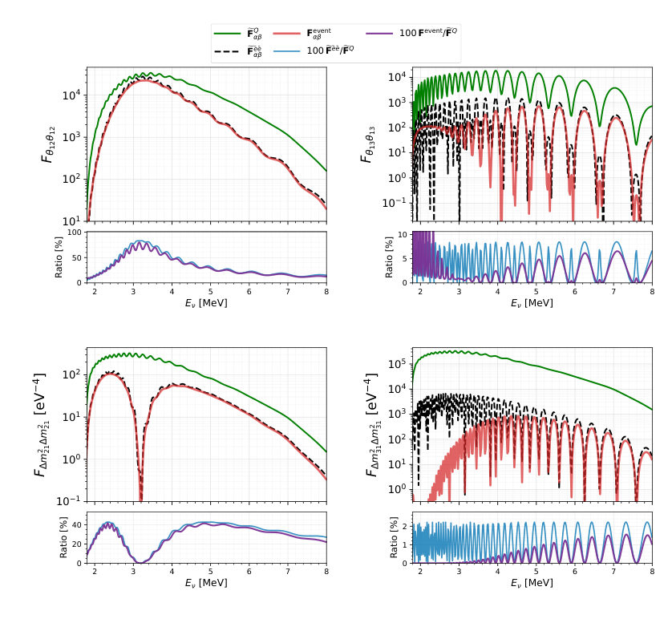
<figcaption class="paper-figure-caption"><b>Fig 1.</b> FIG. 1. Diagonal Fisher-information elements for JUNO with 3% energy resolution including signal and background contributions, shown for NO. Each subplot corresponds to one oscillation parameter: θ12, θ13, ∆m2 21, and ∆m2 31. The upper panels show the event-weighted QFI eFQ αα, the event-weighted electron flavor-FI eF¯e¯e αα, and the event-level Fisher information Fevent αα as functions of the true antineutrino energy Eν. The lower panels show the corresponding information fractions, eF¯e¯e αα/eFQ αα(blue) and Fevent αα /eFQ αα (purple).</figcaption>
</figure>
<figure class="paper-figure-card">
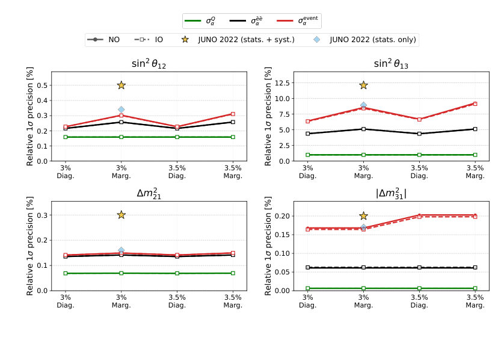
<figcaption class="paper-figure-caption"><b>Fig 2.</b> FIG. 2. Relative 1σ precision for the four oscillation parameters in JUNO, comparing diagonal and marginalized constraints for both NO and IO, as well as energy resolutions of 3% and 3.5%. The diagonal values are extracted from the diagonal elements of the Fisher information matrix, while the marginalized values account for correlations via the inverse of the full Fisher matrix. Blue diamond markers indicate the statistics-only precision, whereas star markers denote the full statistics plus systematics projected six-year precision reported by the JUNO Collaboration [26].</figcaption>
</figure>
<figure class="paper-figure-card">

<figcaption class="paper-figure-caption"><b>Fig 3.</b> FIG. 3. Energy dependence of the single-neutrino QFI matrix elements for an electron antineutrino propagating in vacuum at the JUNO baseline.</figcaption>
</figure>
<figure class="paper-figure-card">

<figcaption class="paper-figure-caption"><b>Fig 4.</b> FIG. 4. Energy dependence of the ten independent elements of the electron-flavor Fisher information matrix obtained from the survival probability P¯e¯e for the four oscillation parameters considered in the JUNO analysis.</figcaption>
</figure>
</div>

<p><strong>Summary.</strong> This work develops an 'information ladder' to quantify how well neutrino oscillation parameters can be determined from reactor antineutrino measurements at JUNO. By comparing Quantum, Flavor, and Event-level Fisher Information, the authors map out the information loss across the measurement chain. They conclude that while some parameters suffer degradation, the experiment remains highly sensitive enough to achieve sub-percent precision on key mass splittings.</p>
<p><strong>Why it may be interesting.</strong> The rigorous application of quantum information theory to particle physics measurements provides a powerful framework for assessing experimental potential, which is relevant to any field dealing with measurement limits in quantum systems.</p>
<details>
<summary>Detailed structure</summary>
<p><strong>Main problem.</strong> The paper quantifies how information about neutrino oscillation parameters is encoded in the quantum state and how efficiently this information can be extracted through measurement.</p>
<p><strong>Main result.</strong> The analysis establishes an information hierarchy (QFI $\succeq$ flavor-FI $\succeq$ event-FI), showing that while information loss occurs for certain parameters ($   heta_{13}, \Delta m_{31}^2$), the remaining information is sufficient for JUNO to achieve high precision on $\Delta m_{31}^2}$.</p>
<p><strong>Method.</strong> It employs Quantum Estimation Theory (QET) to calculate three levels of Fisher Information: Quantum Fisher Information (QFI), classical flavor Fisher Information, and event-level Fisher Information, comparing them using Cramér-Rao bounds.</p>
<p><strong>Model / system.</strong> The system is neutrino oscillation, modeled using the leptonic PMNS mixing matrix, analyzed in the context of reactor antineutrino measurements at the JUNO experiment.</p>
<p><strong>Key observables.</strong> Quantum Fisher Information (QFI), classical flavor Fisher Information ($   ext{flavor-FI}$), and event-level Fisher Information ($   ext{F}_{    ext{event}}$).</p>
<p><strong>Important parameters / regimes.</strong> Oscillation parameters: $   heta_{12},  heta_{13},  heta_{23}, \delta_{CP}, \Delta m^2_{21}, \Delta m^2_{31}$.</p>
<p><strong>Assumptions / limitations.</strong> The analysis primarily focuses on the statistics-only case, neglecting systematic uncertainties, and sometimes neglects matter effects in specific calculations.</p>
<p><strong>Figures summary.</strong> Figures illustrate the diagonal elements of the three Fisher information matrices ($   ext{e}  ext{F}<em ext_e="ext{e">{    ext{Q}}$, $ ext{e}  ext{F}</em>$) as functions of energy, demonstrating the information hierarchy and energy dependence.}ar{  ext{e}}}$, $    ext{F}_{    ext{event}</p>
<p><strong>Paper structure.</strong> The paper develops the theoretical framework by deriving the QFI matrix elements, then calculates the flavor-specific and event-level Fisher matrices, and finally compares these metrics to quantify parameter sensitivity and information loss for JUNO.</p>
</details>
<details>
<summary>Abstract</summary>
<p>Since neutrinos are quantum systems inherently, the precision with which oscillation parameters can be estimated ultimately depends on how much information about these parameters is encoded in the neutrino state and how efficiently that information can be extracted through measurement. In this work, we quantify how information encoded in reactor antineutrino states flows through the measurement process to the events observed at the detector, using quantum and classical Fisher information. We establish the information ladder for JUNO, revealing that the loss of precision across different information levels is strongly parameter dependent. We demonstrate that the JUNO configuration approaches the optimal statistical limit for the oscillation parameters of the solar sector, while information on $θ_{13}$ and $Δm_{31}^{2}$ is significantly degraded by the measurement strategy and detector effects. Despite this information loss, the remaining information is sufficient for JUNO to achieve sub-percent precision on $Δm_{31}^{2}$ within six years.</p>
</details>
<p><sub><a href="#top">↑ back to top</a></sub></p>

<p><a id="paper-2609.10157"></a></p>
<h3 id="quantum-barankin-bounds-beyond-local-unbiasedness-analytic-results-for-gaussian-states-via-a-right-division-framework"><a href="http://arxiv.org/abs/2609.10157v1">Quantum Barankin bounds beyond local unbiasedness: Analytic results for Gaussian states via a right-division framework</a></h3>
<p><strong>Authors:</strong> Maximilian Reichert, Javier Navarro, Gerardo Adesso, Manuel Gessner, Mikel Sanz<br>
<strong>Type:</strong> theory · <strong>Category:</strong> other · <strong>PDF:</strong> <a href="https://arxiv.org/pdf/2609.10157v1">https://arxiv.org/pdf/2609.10157v1</a><br>
<strong>Analysis basis:</strong> full PDF text, analyzed in chunks
<strong>Topic relevance:</strong> <code>quantum measurements</code> <strong>3/5</strong></p>
<div class="figure-strip-hint">↔ Scroll figures horizontally</div>
<div class="paper-figures-scroll">
<figure class="paper-figure-card">

<figcaption class="paper-figure-caption"><b>Fig 1.</b> FIG. 1: Comparison of the RD QBB, SD QBB, and SLD QCRB for qubit phase estimation with parameters n = (0, 0, 1), r0 = 1 10(0, 3, 0) and λ = π/4. The y-axis shows the MSE while the x-axis shows the number of copies N. To avoid the potential divergences studied in [40, 41], we only show the region where the bound is finite (N &gt; 2). The K test points are equidistributed in the interval [0, π</figcaption>
</figure>
<figure class="paper-figure-card">
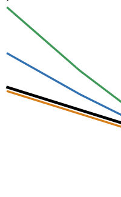
<figcaption class="paper-figure-caption"><b>Fig 2.</b> FIG. 2: Single mode phase estimation with λ = π</figcaption>
</figure>
<figure class="paper-figure-card">

<figcaption class="paper-figure-caption"><b>Fig 3.</b> FIG. 3: Quantum thermometry with N copies, assuming ω = 1 and a true parameter value λ = 2. For all RD QBB the value of γ is chosen to force the unbiasedness condition at all test points.</figcaption>
</figure>
<figure class="paper-figure-card">

<figcaption class="paper-figure-caption"><b>Fig 4.</b> FIG. 4: Loss sensing with N copies, assuming a true transmissivity λ = 1/4 and displacement amplitude α = 1/2. For all RD QBB the value of γ is chosen to force the unbiasedness condition at all test points.</figcaption>
</figure>
</div>

<p><strong>Summary.</strong> This work introduces a quantum Barankin bound, a tighter lower bound on estimation error than the standard QCRB, by utilizing a non-symmetric right-division framework. The authors provide analytic formulas for this bound specifically for Gaussian states. This offers a more powerful tool for determining the ultimate precision limits in quantum parameter estimation, particularly in few-shot regimes.</p>
<p><strong>Why it may be interesting.</strong> The development of tighter, analytically tractable bounds for parameter estimation is crucial for understanding the fundamental limits of quantum measurements, especially in regimes where standard QCRB fails.</p>
<details>
<summary>Detailed structure</summary>
<p><strong>Main problem.</strong> The paper proposes a quantum generalization of the Barankin bound as an alternative to the Quantum Cramér-Rao Bound (QCRB) for quantum parameter estimation.</p>
<p><strong>Main result.</strong> They derive a novel, non-symmetric quantum Barankin bound using a right-division superoperator, which is shown to be generally tighter than previous symmetric bounds.</p>
<p><strong>Method.</strong> The methodology involves extending classical estimation theory bounds to the quantum domain, deriving explicit analytic formulas for Gaussian states using matrix algebra and characteristic functions.</p>
<p><strong>Model / system.</strong> The theory applies to quantum parameter estimation for a family of quantum states $\{\hat{
ho}_{	ilde{\lambda}}\}_{	ilde{\lambda} \in \Lambda}$, with specific analytic derivations provided for Gaussian states.</p>
<p><strong>Key observables.</strong> Mean Squared Error (MSE) of estimators, Quantum Fisher Information (QFI), and the Barankin matrix.</p>
<p><strong>Important parameters / regimes.</strong> The parameter set $\Lambda$ and the specific structure of the Gaussian states (defined by mean vectors and covariance matrices).</p>
<p><strong>Assumptions / limitations.</strong> The derivation relies on the existence and properties of the right-division superoperator and the assumption that the relevant operators are trace class.</p>
<p><strong>Paper structure.</strong> The paper develops the bound by first establishing the general framework using the right-division operator, comparing it to the symmetric version, and then specializing the results to derive analytic formulas for Gaussian states.</p>
</details>
<details>
<summary>Abstract</summary>
<p>We propose a quantum version of the Barankin bound as an alternative to the quantum Cramér-Rao bound for quantum parameter estimation. The quantum Barankin bound provides a lower bound on the mean squared error of estimators satisfying arbitrarily chosen bias constraints at arbitrarily chosen parameter points. In particular, unbiasedness over the entire parameter space can be imposed, yielding precision limits for globally unbiased quantum parameter estimation. In contrast to the recently derived quantum Barankin bound, which is based on a symmetric division superoperator, our bound is based on a nonsymmetric right-division superoperator. This formulation enables us to find analytic expressions for the Barankin matrix for Gaussian states, which allows for an efficient calculation of the bound. We demonstrate the usefulness of our results by applying them to various examples that exhibit the threshold effect in the few-shot regime, which is invisible to the standard quantum Cramér-Rao bound approach.</p>
</details>
<p><sub><a href="#top">↑ back to top</a></sub></p>

<p><a id="paper-2609.10141"></a></p>
<h3 id="the-sample-complexity-of-quantum-entanglement-allocation"><a href="http://arxiv.org/abs/2609.10141v1">The Sample Complexity of Quantum Entanglement Allocation</a></h3>
<p><strong>Authors:</strong> Nathan Roll<br>
<strong>Type:</strong> both · <strong>Category:</strong> quantum information and computing · <strong>PDF:</strong> <a href="https://arxiv.org/pdf/2609.10141v1">https://arxiv.org/pdf/2609.10141v1</a><br>
<strong>Analysis basis:</strong> full PDF text, analyzed in chunks
<strong>Topic relevance:</strong> <code>quantum measurements</code> <strong>3/5</strong></p>
<div class="figure-strip-hint">↔ Scroll figures horizontally</div>
<div class="paper-figures-scroll">
<figure class="paper-figure-card">

<figcaption class="paper-figure-caption"><b>Fig 1.</b> Figure 1: (a) Three-qubit encodings at request probabilities (1/4, 1/2, 1/4). Groups share en- tanglement; filled squares recover the bit, empty squares are uninformative. All four codes pre- serve the stored bit. (b) Ideal prediction error when π(XXX) = 1/2, π(ZZI) = pL and π(IZZ) = 1/2 −pL; black selects the better pair. (c) Native 15-qubit commissioning on ibm_marrakesh favors the full chain. Even/odd are fixed product allocations. Each mean uses 1,920 shots over all 15 queries and both bits; bars are simultaneous 95% Hoeffding bounds for four means, conditional on independent shots in this one job. The allocations in (c) are fixed before ac- quisition.</figcaption>
</figure>
<figure class="paper-figure-card">
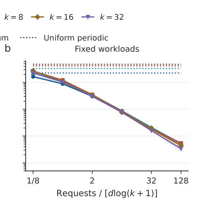
<figcaption class="paper-figure-caption"><b>Fig 2.</b> Figure 2: Depth changes the error scale as well as the request requirement. (a) On the budget- indexed hard family, both empirical and data-free periodic allocations follow a square-root rate. The task probabilities change with the budget. (b) On fixed Dirichlet workloads, only the empirical learner improves. Solid lines show empirical optima; dotted lines show uniform periodic allocations. Each line averages four dimension means, each based on 64 independent seeds; shading spans those dimension means, not confidence intervals. The dashed line is 0.025x−1/2, an unfitted slope guide, not a theorem constant. Every risk uses the exact same-depth physical optimum as comparator.</figcaption>
</figure>
<figure class="paper-figure-card">
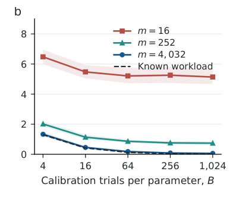
<figcaption class="paper-figure-caption"><b>Fig 3.</b> Figure 3: More requests cannot remove a calibration floor. (a) Request learning at three fixed calibration budgets; the dashed curve supplies the true channel. (b) Calibration learning at three fixed request budgets; the dashed curve supplies the true workload. Both panels use 63-qubit heterogeneous-noise instances and the smoothed Joint estimator. Excess is relative to the true- workload, true-channel oracle in the same circuit family. Bands are pointwise 95% bootstrap inter- vals over 32 independent instances, after averaging four request streams and four calibration panels. Calibration costs 125B observations, separately from m.</figcaption>
</figure>
<figure class="paper-figure-card">
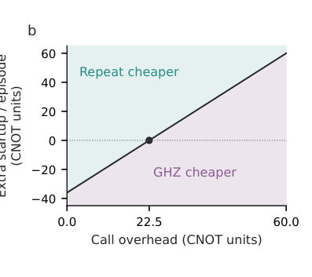
<figcaption class="paper-figure-caption"><b>Fig 4.</b> Figure 4: (a) Fresh random requests and chosen repair queries have different call costs. Points reproduce Bell coverage q = .8 from a product probe. (b) Cost comparison at 80% power and 5% false alarms for known (e0, e1) = (.02, .164). GHZ uses 18 calls and 111.6 logical CNOTs; a product-initialized repeated-query policy uses 19.6 expected calls and 75.6 CNOTs. The boundary includes extra GHZ startup cost per episode. These are two attaining policies, not the full adaptive frontier.</figcaption>
</figure>
<figure class="paper-figure-card">
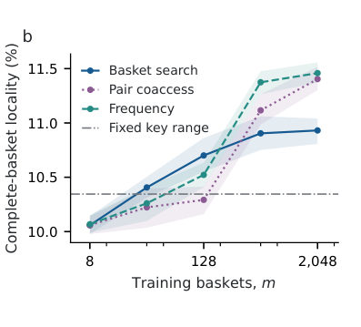
<figcaption class="paper-figure-caption"><b>Fig 5.</b> Figure 5: (a) Exact empirical co-location on structured tables, with requests scaled by rk. Curves average r ∈{1, 4} and k ∈{1, 2, 3}, with 32 instances per cell; bands bootstrap training instances. (b) Complete-basket locality on the public Online Retail trace, with 3,922 records and eight shards of capacity 512. Learned methods share a training prefix; fixed key range uses none. Bands bootstrap 16 request streams conditional on the fixed catalogue and test trace. All three capacities and the exact small-schema study appear in Appendix Q.</figcaption>
</figure>
</div>

<p><strong>Summary.</strong> This paper analyzes the theoretical limits on how much past data is needed to optimally allocate quantum entanglement resources for future queries. It derives sharp bounds on the sample complexity and excess error for various graph structures, combining theoretical analysis with hardware benchmarking. The findings are critical for designing robust quantum protocols that rely on sequential resource management.</p>
<p><strong>Why it may be interesting.</strong> The work provides rigorous bounds on how much data (requests) is needed to reliably manage and allocate fragile quantum resources like entanglement, which is crucial for fault-tolerant quantum computation.</p>
<details>
<summary>Detailed structure</summary>
<p><strong>Main problem.</strong> The paper investigates the sample complexity required to optimally allocate quantum entanglement resources among qubits based on sequential query observations.</p>
<p><strong>Main result.</strong> The required sample complexity depends on the specific allocation choices, and error bounds for path queries scale inversely with the number of requests ($m$) and related to the connectivity ($k$).</p>
<p><strong>Method.</strong> The authors use information-theoretic bounds, characterizing attainable prediction-contrast regions for Pauli queries and deriving minimax excess error bounds for learning optimal resource allocation.</p>
<p><strong>Model / system.</strong> The system involves a quantum memory storing a classical bit and answering requests using a fixed detector, modeled using $d$-qubit states and graph-state queries on bipartite graphs.</p>
<p><strong>Key observables.</strong> Minimax excess error, attainable prediction-contrast region, signed coherence measurements, and locality scores.</p>
<p><strong>Important parameters / regimes.</strong> Number of requests ($m$), number of qubits ($d$), path depth ($k$), and calibration trials ($B$).</p>
<p><strong>Assumptions / limitations.</strong> The analysis assumes the detector preserves coherence within measured sectors, and initial learning bounds assume exact empirical optimization.</p>
<p><strong>Figures summary.</strong> Figures illustrate error scaling vs. requests ($m$) and calibration trials ($B$), and show coherence diagnostics for native 15-qubit paths comparing different encoding types.</p>
<p><strong>Paper structure.</strong> The paper progresses from characterizing the theoretical sample complexity for Pauli queries to deriving explicit error bounds for paths and general graphs, concluding with experimental comparisons on hardware and classical data locality studies.</p>
</details>
<details>
<summary>Abstract</summary>
<p>How many past requests are needed to decide which qubits should share entanglement? We show that the answer depends on the allocation choices created by the queries: a larger memory can require no more data. The memory stores a classical bit and answers requests through a fixed detector that preserves coherence within each measured sector. For independent commuting $X$- and $Z$-type Pauli queries, we characterize the full attainable prediction-contrast region and construct encodings that preserve the bit at every nonzero vertex. With sharp reports, a $d$-qubit path and groups of at most $k$ qubits have minimax excess error after $m$ requests proportional to $k^{-1}\min\{1,\sqrt{d\log(k+1)/m}\}$, uniformly for $2\leq k<d$. Connected biclique regions can grow without increasing sample demand when depth, region count and connections per region stay bounded. Preparation noise introduces a separate calibration requirement. We derive an exact tradeoff with extra fresh detector calls and transfer the learning law to structured transaction co-location. Population-risk experiments test the statistical predictions. We also compare encodings on a native 15-qubit device and learned partitions on public purchase baskets. The full chain wins on the device; frequency grouping outperforms basket search in the largest-capacity retail setting.</p>
</details>
<p><sub><a href="#top">↑ back to top</a></sub></p>

<p><a id="paper-2609.09375"></a></p>
<h3 id="tuning-charge-density-wave-transitions-through-lattice-strain-in-nbse3"><a href="http://arxiv.org/abs/2609.09375v1">Tuning Charge Density Wave transitions through lattice strain in NbSe3</a></h3>
<p><strong>Authors:</strong> Antoine Gallo Frantz, Aleksander Sinchenko, Luc Ortega, Pavel Grigoriev, Vladislav Kochev, Pierre Godard, Pierre Olivier Renault, Dominique Thiaudiere, David Le Bolloch, Vincent Jacques<br>
<strong>Type:</strong> both · <strong>Category:</strong> strongly correlated electrons · <strong>PDF:</strong> <a href="https://arxiv.org/pdf/2609.09375v1">https://arxiv.org/pdf/2609.09375v1</a><br>
<strong>Analysis basis:</strong> full PDF text, analyzed in chunks
<strong>Topic relevance:</strong> <code>Frenkel-Kontorova</code> <strong>3/5</strong></p>
<div class="figure-strip-hint">↔ Scroll figures horizontally</div>
<div class="paper-figures-scroll">
<figure class="paper-figure-card">
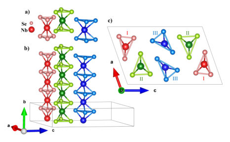
<figcaption class="paper-figure-caption"><b>Fig 1.</b> FIG. 1. NbSe3 crystal structure with a) the three different types of prisms for type I, II and III chains. b) 3D crys- tal structure made of three different and weakly coupled 1D chains along b. c) Projection of the unit cell in the (a, c) plane.</figcaption>
</figure>
<figure class="paper-figure-card">

<figcaption class="paper-figure-caption"><b>Fig 2.</b> FIG. 2. a) NbSe3 sample (narrow metallic-grey line) glued on the cross-shaped deformable substrate with the b and c crys- tallographic axis aligned with the substrate branches. Four silver paint electrical contact are made for current injection and voltage measurement in four-bar geometry. b) Schematic drawing of NbSe3 under applied stresses along b and c.</figcaption>
</figure>
<figure class="paper-figure-card">
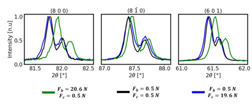
<figcaption class="paper-figure-caption"><b>Fig 3.</b> FIG. 3. Normalized intensities obtained around the 800, 8¯10 and 601 Bragg reflections at 300 K as a function of 2θ for different sets of applied stresses: ∼20 N along b only (green curves), ∼20 N along c only (blue curves) and without stress (black curves). Each Bragg reflection displays two peaks cor- responding to the two components Kα1 and Kα2 of the x-ray beam.</figcaption>
</figure>
<figure class="paper-figure-card">
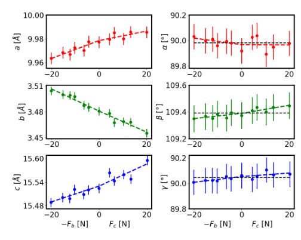
<figcaption class="paper-figure-caption"><b>Fig 4.</b> FIG. 4. Evolution of the 6 lattice parameters a, b, c, α, β and γ as a function -Fb and Fc. Two different linear functions are used to fit the curves as a function of -Fb and Fc (colored dashed lines) for all curves. A black dashed line corresponding to the average angles is plotted for α, β and γ.</figcaption>
</figure>
<figure class="paper-figure-card">

<figcaption class="paper-figure-caption"><b>Fig 5.</b> FIG. 5. R(T) curve measured in the pristine state (black solid line) and linear extrapolation RM(T) from the metallic part of R(T) (red dotted line). The resistance values at critical temperatures RT c1 and RT c2 are marked with blue dots while the resistance increments α1 and α2 and the resistance values R1, R2, RM1 and RM2 used to compute them (see text) are marked with green dots.</figcaption>
</figure>
</div>

<p><strong>Summary.</strong> This work experimentally demonstrates that applying uniaxial lattice strain to NbSe3 significantly tunes its two distinct Charge Density Wave (CDW) transitions. By combining X-ray diffraction with transport measurements, the authors establish a quantitative, linear correlation between the material's structural parameters and the critical temperatures of the CDW states. This highlights the extreme sensitivity of correlated electronic phases to mechanical boundary conditions.</p>
<p><strong>Why it may be interesting.</strong> The strong coupling between mechanical strain and electronic phase transitions (CDW) is a key area of condensed matter physics. Understanding how external mechanical fields can tune correlated electronic states provides insights applicable to designing novel electronic materials.</p>
<details>
<summary>Detailed structure</summary>
<p><strong>Main problem.</strong> The study investigates how applying mechanical lattice strain (tensile stress) tunes the Charge Density Wave (CDW) transitions in the quasi-one-dimensional material NbSe3.</p>
<p><strong>Main result.</strong> The CDW critical temperatures ($T_{c1}, T_{c2}$) show strong, predictable linear correlations with the applied strain and resulting lattice parameters, suggesting the CDW state is highly sensitive to lattice geometry.</p>
<p><strong>Method.</strong> The research combines <em>in-situ</em> X-ray diffraction (XRD) to measure lattice strain and elastic constants with transport measurements to track the temperature-dependent electrical resistance anomalies associated with the CDW transitions.</p>
<p><strong>Model / system.</strong> The system is NbSe3, a prototypical quasi-1D conductor known for exhibiting multiple CDW states. The analysis models the coupling between structural distortions (lattice strain) and electronic instabilities (CDW formation) using elastic theory and electronic susceptibility calculations.</p>
<p><strong>Key observables.</strong> CDW critical temperatures ($T_{c1}=145	ext{ K}, T_{c2}=59	ext{ K}$), electrical resistance changes ($\alpha_1, \alpha_2$), lattice parameters ($a, b, c, \alpha, eta, \gamma$), and elastic constants (Young's moduli, Poisson's coefficients).</p>
<p><strong>Important parameters / regimes.</strong> Applied uniaxial tensile stresses ($\sigma_b, \sigma_c$), lattice strain ($\epsilon$), and the ratio of lattice parameters ($c/a$, $1/b$).</p>
<p><strong>Assumptions / limitations.</strong> The analysis assumes the linear elastic regime for strain calculations and that the changes in conductivity are dominated by modifications to the band curvature rather than just the superconducting gap magnitude.</p>
<p><strong>Figures summary.</strong> Figures illustrate the evolution of the six lattice parameters versus applied forces, and show the temperature dependence of resistance curves under varying tensile stresses, mapping out the shifts in $T_c$ and resistance jumps.</p>
<p><strong>Paper structure.</strong> The paper systematically presents mechanical characterization (XRD/elastic constants) followed by electronic characterization (transport measurements), establishing a quantitative link between the measured structural changes and the resulting shifts in the CDW transition temperatures and associated transport signatures.</p>
</details>
<details>
<summary>Abstract</summary>
<p>The Charge Density Wave (CDW) state is a perfect example of a combined structural and electronic state, both characterized by a periodic lattice distortion and an electronic modulation of condensed electrons, resulting from electron-phonon coupling. They are thus prone to be tuned by lattice strain. NbSe3 is a prototypical example of CDW states, with a chain-like structure displaying two CDWs at 145K and 59K, with wavevectors along and inclined with respect to the chain axis b. Here, we report on the evolution of the lattice structure and CDW properties in the quasi-one-dimensional charge-density-wave system NbSe3 under tensile stresses applied along and perpendicular to the chains axis b by a combination of X-ray diffraction and transport measurements. We find that the lattice structure show exotic Poissons coefficients and strongly anisotropic Youngs moduli while the evolution of the electrical resistance demonstrates shifts of both charge-density-wave critical temperatures that are strongly correlated with the lattice parameters. The two CDW transitions display different behaviours under applied stresses, and suggest that a modification of the band curvature leads to the observed transport signatures.</p>
</details>
<p><sub><a href="#top">↑ back to top</a></sub></p>

<p><a id="paper-2609.10078"></a></p>
<h3 id="why-three-a-two-level-system-with-four-mutually-unbiased-questions"><a href="http://arxiv.org/abs/2609.10078v1">Why three? A two-level system with four mutually unbiased questions</a></h3>
<p><strong>Authors:</strong> Jonte R. Hance<br>
<strong>Type:</strong> theory · <strong>Category:</strong> quantum information and computing · <strong>PDF:</strong> <a href="https://arxiv.org/pdf/2609.10078v1">https://arxiv.org/pdf/2609.10078v1</a><br>
<strong>Analysis basis:</strong> full PDF text, analyzed in chunks
<strong>Topic relevance:</strong> <code>quantum measurements</code> <strong>3/5</strong></p>
<div class="figure-strip-hint">↔ Scroll figures horizontally</div>
<div class="paper-figures-scroll">
<figure class="paper-figure-card">

<figcaption class="paper-figure-caption"><b>Fig 1.</b> Low-resolution page preview, page 2</figcaption>
</figure>
<figure class="paper-figure-card">
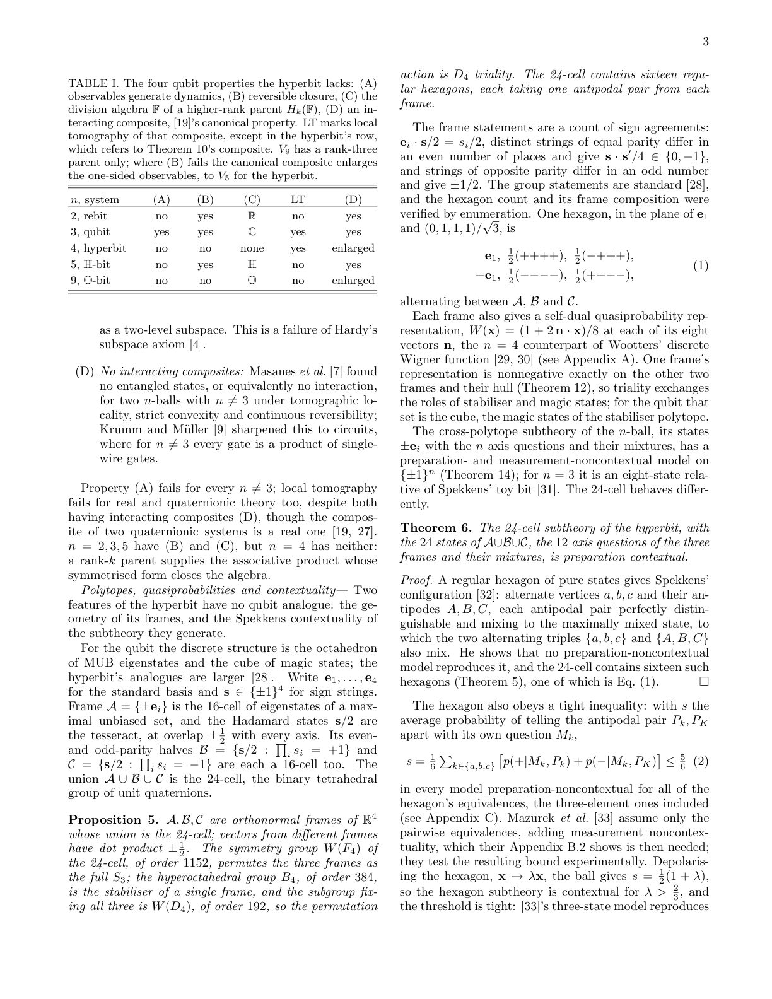
<figcaption class="paper-figure-caption"><b>Fig 2.</b> Low-resolution page preview, page 3</figcaption>
</figure>
<figure class="paper-figure-card">

<figcaption class="paper-figure-caption"><b>Fig 3.</b> Low-resolution page preview, page 4</figcaption>
</figure>
<figure class="paper-figure-card">

<figcaption class="paper-figure-caption"><b>Fig 4.</b> Low-resolution page preview, page 5</figcaption>
</figure>
<figure class="paper-figure-card">
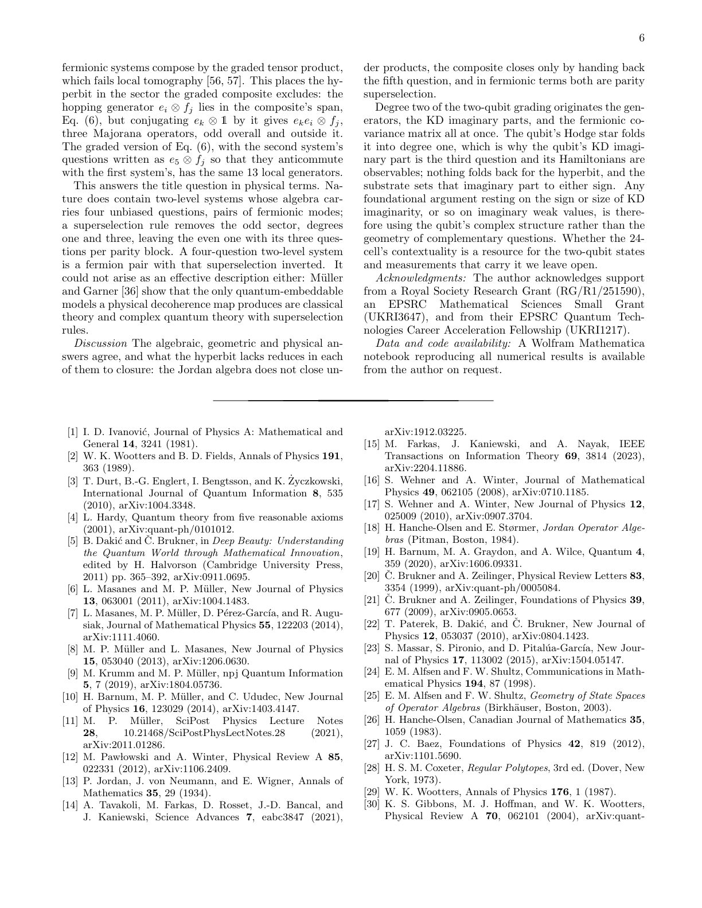
<figcaption class="paper-figure-caption"><b>Fig 5.</b> Low-resolution page preview, page 6</figcaption>
</figure>
</div>

<p><strong>Summary.</strong> This paper explores the theoretical limits of measurement in quantum mechanics by examining the concept of mutually unbiased questions (MUBs). It shows that while a four-question system (hyperbit) can be mathematically constructed, it fails to satisfy several fundamental physical criteria—such as those governing dynamics or algebraic closure—that are inherent to the standard qubit model. This suggests that the structure of quantum theory strongly constrains the number and nature of possible measurements.</p>
<p><strong>Why it may be interesting.</strong> It provides a deep theoretical constraint on the structure of quantum measurements, suggesting that physical reality might enforce specific algebraic symmetries (like those found in qubits) that are violated by mathematically possible, but physically inconsistent, extensions.</p>
<details>
<summary>Detailed structure</summary>
<p><strong>Main problem.</strong> The paper investigates the maximum number of mutually unbiased questions (MUBs) a two-level system can support, contrasting the standard quantum mechanical result (three for a qubit) with potential extensions.</p>
<p><strong>Main result.</strong> The algebraic structure dictates that the maximum number of unbiased questions is always odd (e.g., 3 or 5), suggesting that a hypothetical four-question system (hyperbit) lacks key physical properties of a true quantum system.</p>
<p><strong>Method.</strong> The analysis combines algebraic constraints (Clifford algebras, anticommuting involutions) with geometric modeling (Bloch balls, 24-cell) and quantum information diagnostics (contextuality testing, Kirkwood-Dirac distributions).</p>
<p><strong>Model / system.</strong> The primary model is the two-level system, extended to a hypothetical 'hyperbit' supporting four MUBs, which is mathematically realized as a four-dimensional Bloch ball. The analysis often embeds this into a two-qubit system for physical realization.</p>
<p><strong>Key observables.</strong> Mutual Unbiased Questions (MUBs), preparation contextuality (tested via the hexagon subtheory), Kirkwood-Dirac imaginary parts, and the four properties (A-D) that distinguish qubits from the hyperbit.</p>
<p><strong>Important parameters / regimes.</strong> The number of questions ($n=2, 3, 4, 5$), the contextuality threshold ($\lambda > 2/3$), and the algebraic structure of the underlying operators.</p>
<p><strong>Assumptions / limitations.</strong> The analysis assumes the validity of single-system postulates for the hyperbit, while the core argument relies on identifying which properties (like energy observability or algebraic closure) are violated when moving from $n=3$ to $n=4$.</p>
<p><strong>Figures summary.</strong> Table I summarizes four key properties (A-D) that are compared across different systems (rebit, qubit, hyperbit, H-bit, O-bit), highlighting the failure of the hyperbit to satisfy all of them.</p>
<p><strong>Paper structure.</strong> The paper progresses by establishing the algebraic condition for MUBs, deriving the structural limitations (odd number of questions), constructing the mathematical hyperbit, and then rigorously testing this model against known physical constraints (dynamics, closure, composability) using diagnostic tools.</p>
</details>
<details>
<summary>Abstract</summary>
<p>Two sharp yes/no questions are mutually unbiased if and only if their involutions anticommute. A set of unbiased questions is therefore a Clifford algebra, whose maximal size is odd, meaning four anticommuting questions typically imply a fifth: the two-level systems of real, complex and quaternionic quantum theory allow two, three and five questions, while four is skipped. Without this operator product restriction, a two-level system with four unbiased questions exists as the four-dimensional Bloch ball, the hyperbit. The single-system postulates that pick out the Jordan state spaces allow such a model, and only energy observability rules it out. We show what it lacks, and realise it inside two qubits: its Kirkwood-Dirac imaginary parts are hidden $\mathfrak{so}(4)$ generators, its composites allow entanglement but no interaction, and its 24-cell of states stays Spekkens preparation contextual down to depolarising strength $2/3$. In fermionic terms, the four questions are the Majorana operators of two modes while the fifth is parity: the four-question system is therefore the sector removed by parity superselection.</p>
</details>
<p><sub><a href="#top">↑ back to top</a></sub></p>

<p><a id="paper-2609.10211"></a></p>
<h3 id="finite-particle-quantum-reduction-of-thermodynamic-irreversibility"><a href="http://arxiv.org/abs/2609.10211v1">Finite-Particle Quantum Reduction of Thermodynamic Irreversibility</a></h3>
<p><strong>Authors:</strong> Borhan Ahmadi<br>
<strong>Type:</strong> theory · <strong>Category:</strong> statistical mechanics · <strong>PDF:</strong> <a href="https://arxiv.org/pdf/2609.10211v1">https://arxiv.org/pdf/2609.10211v1</a><br>
<strong>Analysis basis:</strong> full PDF text, analyzed in chunks
<strong>Topic relevance:</strong> <code>Keldysh / 2PI / non-Gaussian methods</code> <strong>2/5</strong> · <code>analog quantum simulation</code> <strong>2/5</strong> · <code>non-equilibrium universality</code> <strong>2/5</strong> · <code>quantum measurements</code> <strong>2/5</strong> · <code>correlated / nonlocal dissipation</code> <strong>1/5</strong> · <code>driven-dissipative phase transition</code> <strong>1/5</strong> · <code>methods for driven-dissipative</code> <strong>1/5</strong></p>
<div class="figure-strip-hint">↔ Scroll figures horizontally</div>
<div class="paper-figures-scroll">
<figure class="paper-figure-card">

<figcaption class="paper-figure-caption"><b>Fig 1.</b> FIG. 1. Matched quantum–classical construction. (a) The finite-particle Bose–Hubbard model and its number-conserving classical-field counterpart have the same coherent-state energy landscape and undergo the same confinement protocol. (b) The classical right-half coordinate is divided so that each region has the same invariant weight as the matching quantum occupation sector. (c) Three states associated with the same microscopic situation. The exact state ρ contains the full information. The record-only representative ¯ρR keeps only the spatial probabilities. The energy-and-record representative ¯ρE,R also keeps the exact mean energy. The difference ¯ρE,R −¯ρR is the refinement supplied by...</figcaption>
</figure>
<figure class="paper-figure-card">
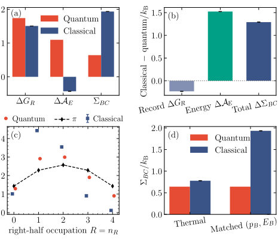
<figcaption class="paper-figure-caption"><b>Fig 2.</b> FIG. 2. Why the finite-particle quantum process is less ir- reversible. (a) Change in the information hidden from the spatial record, the part resolved by adding the mean energy, and the resulting process entropy generation for the strict ini- tial matching. (b) Classical-minus-quantum process gap split into record and energy-resolved parts. The record part alone favors the classical system, while the energy-resolved part pro- duces the quantum advantage. (c) Endpoint record distribu- tions and the common multiplicity reference. The quantum record is more relaxed even though the combined energy-and- record description leaves a smaller residual information gap. (d) Process entropy generation...</figcaption>
</figure>
<figure class="paper-figure-card">
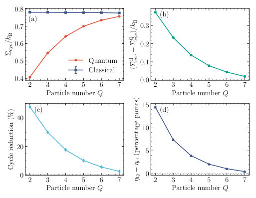
<figcaption class="paper-figure-caption"><b>Fig 3.</b> FIG. 3. Crossover toward the classical-field regime. (a) Quantum and classical entropy generation of the complete cycle. The retained (E, R) ledger assigns the nonzero pro- cess term to B →C−, while the physical microscopic ledger realizes the same amount during C+ →¯C. The two are not added. (b) Classical-minus-quantum cycle entropy-generation gap. (c) Relative reduction of the cycle entropy generation. (d) Efficiency advantage at matched hot heat input and reser- voir temperatures. No asymptotic power law is fitted.</figcaption>
</figure>
<figure class="paper-figure-card">
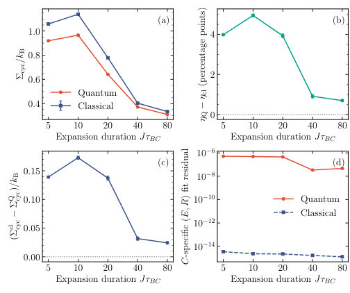
<figcaption class="paper-figure-caption"><b>Fig 4.</b> FIG. 4. Robustness to the duration of the isolated ex- pansion. (a) Quantum and classical cycle entropy genera- tion as JτBC is varied. (b) Efficiency advantage at matched cycle resources. (c) Classical-minus-quantum cycle entropy- generation gap. (d) Constraint residual of the energy-and- record reconstruction at each new endpoint C−. The rep- resentative and controlled Hamiltonian are rebuilt for every duration before the cold-side closure is defined.</figcaption>
</figure>
</div>

<p><strong>Summary.</strong> This work compares the thermodynamic irreversibility of a finite-particle quantum system (Bose-Hubbard model) against its classical field analog. By analyzing entropy generation during a heat-engine cycle, the authors show that retaining energy information beyond just the spatial record allows the quantum system to perform work with lower entropy cost. This quantum advantage, however, vanishes in the large particle number limit.</p>
<p><strong>Why it may be interesting.</strong> It provides a rigorous, quantitative comparison of quantum vs. classical thermodynamics in the context of finite, non-equilibrium processes, directly addressing the role of quantum coherence in thermodynamic efficiency.</p>
<details>
<summary>Detailed structure</summary>
<p><strong>Main problem.</strong> The paper investigates whether the operational reduction of information in a finite quantum system, compared to its classical counterpart, leads to a less costly thermodynamic process regarding entropy generation.</p>
<p><strong>Main result.</strong> The quantum system exhibits smaller entropy generation and achieves higher work efficiency than the classical system under matched thermal resources, although this advantage diminishes as the particle number increases toward the classical limit.</p>
<p><strong>Method.</strong> The analysis uses a heat-engine cycle comparison, quantifying information loss via entropy gaps derived from comparing state representations constrained by the spatial record (R) versus the combined energy and record (E, R).</p>
<p><strong>Model / system.</strong> The study compares a finite-particle Bose–Hubbard chain (quantum system) with its number-conserving classical-field counterpart. The Hamiltonians are matched by setting specific coupling constants.</p>
<p><strong>Key observables.</strong> Entropy generation ($\Sigma$), work extracted, information gaps ($G_R, A_E, I_{E,R}$), and the comparison of $\Sigma_Q$ vs $\Sigma_{cl}$.</p>
<p><strong>Important parameters / regimes.</strong> Total number of bosons ($Q$), number of sites ($L$), and the confinement parameter ($\Lambda$).</p>
<p><strong>Assumptions / limitations.</strong> The comparison assumes matched thermal resources, and the advantage of the quantum system is shown to fade as $Q$ grows.</p>
<p><strong>Figures summary.</strong> Figures illustrate the matched quantum-classical construction, showing the three state representations ($
ho, ar{
ho}<em E_R="E,R">R, ar{
ho}</em>$) and the corresponding entropy gaps, while supplementary figures confirm numerical stability and robustness.</p>
<p><strong>Paper structure.</strong> The paper establishes the problem by defining the quantum and classical models, develops the theoretical framework using entropy decomposition identities ($G_R = A_E + I_{E,R}$), applies this to a heat-engine cycle comparison, and concludes by analyzing the resulting entropy costs and their dependence on particle number.</p>
</details>
<details>
<summary>Abstract</summary>
<p>Thermodynamics is useful because it lets us predict and control complex systems from a few accessible quantities when microscopic reconstruction is impractical. We ask whether this operational reduction can be less costly in a finite quantum system than in a matched classical one. We compare a few-boson Bose--Hubbard chain with its number-conserving classical-field counterpart under the same driving and the same coarse spatial record. The quantum system relaxes more in the observed particle distribution, yet the retained mean energy resolves more of the microscopic structure hidden by that record, leaving less information unusable and smaller entropy generation. We then close the process into a heat-engine cycle whose controls use only the measured mean energy and spatial record, not full state tomography; at matched thermal resources, the smaller entropy generation gives more work and higher efficiency. The advantage fades as the particle number grows toward the classical-field regime.</p>
</details>
<p><sub><a href="#top">↑ back to top</a></sub></p>

<p><a id="paper-2609.10470"></a></p>
<h3 id="symmetry-structure-dependent-diagnostic-of-the-quantum-mpemba-effect"><a href="http://arxiv.org/abs/2609.10470v1">Symmetry structure dependent diagnostic of the Quantum Mpemba Effect</a></h3>
<p><strong>Authors:</strong> Tamizhselvan S, Manju C, Bijay Kumar Agarwalla, Uma Divakaran<br>
<strong>Type:</strong> theory · <strong>Category:</strong> statistical mechanics · <strong>PDF:</strong> <a href="https://arxiv.org/pdf/2609.10470v1">https://arxiv.org/pdf/2609.10470v1</a><br>
<strong>Analysis basis:</strong> full PDF text, analyzed in chunks
<strong>Topic relevance:</strong> <code>analog quantum simulation</code> <strong>2/5</strong> · <code>Keldysh / 2PI / non-Gaussian methods</code> <strong>1/5</strong> · <code>correlated / nonlocal dissipation</code> <strong>1/5</strong> · <code>driven-dissipative phase transition</code> <strong>1/5</strong> · <code>methods for driven-dissipative</code> <strong>1/5</strong> · <code>non-equilibrium universality</code> <strong>1/5</strong> · <code>quantum measurements</code> <strong>1/5</strong> · <code>scars &amp; prethermalization</code> <strong>1/5</strong></p>
<div class="figure-strip-hint">↔ Scroll figures horizontally</div>
<div class="paper-figures-scroll">
<figure class="paper-figure-card">

<figcaption class="paper-figure-caption"><b>Fig 1.</b> FIG. 1. Structure of the initial reduced density matrix ˆρA(0) in the symmetry-resolved basis for the charge and permutational- symmetry cases. Panels (a,b) show magnitude of ˆρA(0), denoted as |ˆρA(0)|, in the subsystem-charge qA basis for the tilted ferromagnetic initial state, as given in Eq. (7) with (a) θ = 0, and (b) θ = π/2, respectively, demonstrating support over several qA sectors when θ = π/2 . Panels (c,d) show the corresponding reduced density matrix in the subsystem total-spin jA basis for the initial state given in Eq. (8) with (c) ∆θ = 0 and (d) ∆θ = π/2, respectively, with ∆θ = π/2 showing support and coherences across different jA sectors. These plots correspond to N = 80...</figcaption>
</figure>
<figure class="paper-figure-card">

<figcaption class="paper-figure-caption"><b>Fig 2.</b> FIG. 2. Initial values of the entanglement asymmetry ∆SA(t=0) and trace distance ∆(ˆρA)(t=0) for charge and permutation- symmetry-breaking initial states. Panels (a,b) correspond to the charge symmetry-breaking initial state (Eq. (7)), and the diagnostics are plotted as a function of the tilt angle θ. The reduced diagonal ensemble ρA DE is constructed with respect to the charge-symmetric Hamiltonian in Eq. (2) with α = 1/N and p = π/2. Panels (c,d) correspond to the permutational symmetry-breaking initial state in Eq. (8) where the diagnostics are plotted as functions of the polar angle difference ∆θ. Here, ρA DE is constructed with respect to Hamiltonian in Eq. (1), with α1 = 1/N, α2 =...</figcaption>
</figure>
<figure class="paper-figure-card">
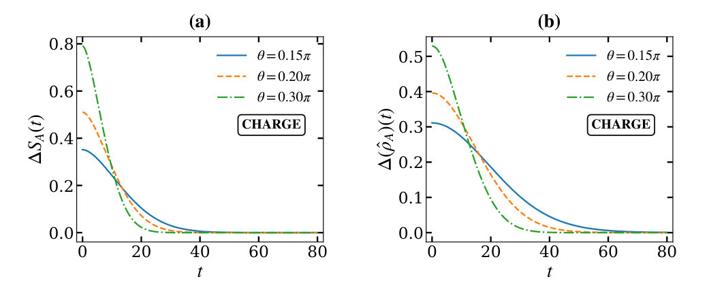
<figcaption class="paper-figure-caption"><b>Fig 3.</b> FIG. 3. Charge symmetry-breaking dynamics : (a) Time evolution of the entanglement asymmetry ∆SA(t) and the (b) trace distance ∆(ρA)(t) for charge symmetry case. The three curves correspond to different symmetry-breaking parameters, i.e. initial tilt angle θ. For larger θ, the initial value of both diagnostics is larger but the decay is faster. The results are obtained by exact diagonalization for N = 80 , NA = 2, with the Hamiltonian in Eq. (2) and parameters set to α = 1/N , p = π/2</figcaption>
</figure>
<figure class="paper-figure-card">

<figcaption class="paper-figure-caption"><b>Fig 4.</b> FIG. 4. Permutational symmetry-breaking dynamics : (a) Time evolution of the entanglement asymmetry ∆SA(t) and (b) trace distance ∆(ρA)(t) for the permutational symmetry case. The three curves correspond to different symmetry-breaking parameter ∆θ. The results are obtained by exact diagonalization for N = 80 , NA = 2, by drawing subsystem from the middle of the spin chain, for the Hamiltonian in Eq. (1) with parameters α1 = 1/N, α2 = 2/N, and p = π/2. The insets magnify the indicated intermediate and late time regions to clearly highlight the differences between the curves.</figcaption>
</figure>
<figure class="paper-figure-card">
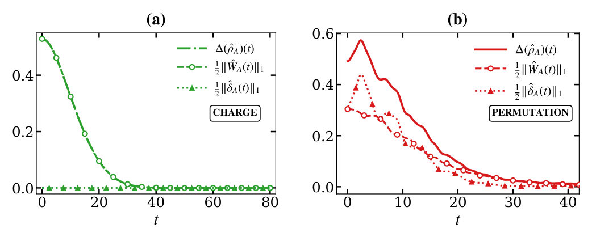
<figcaption class="paper-figure-caption"><b>Fig 5.</b> FIG. 5. Comparison of the contributions from ˆ WA(t) and ˆδA(t) to the trace distance ∆(ˆρA)(t) dynamics for (a) charge and (b) permutation symmetries. The charge symmetry broken initial state has θ = 0.3π, and is evolved with the Hamiltonian</figcaption>
</figure>
</div>

<p><strong>Summary.</strong> This paper compares two diagnostic tools—entanglement asymmetry and trace distance—to study symmetry restoration dynamics, particularly in the context of the Quantum Mpemba Effect. By analyzing spin-1/2 systems with different symmetries, the authors establish precise conditions under which energy-based measures reliably reflect the underlying symmetry-driven quantum dynamics. This clarifies the distinct physical information contained in different quantum observables.</p>
<p><strong>Why it may be interesting.</strong> This work provides a rigorous theoretical framework for distinguishing between different types of quantum information encoded in symmetry measures versus energy-based measures, which is crucial for interpreting experimental results in open quantum systems.</p>
<details>
<summary>Detailed structure</summary>
<p><strong>Main problem.</strong> The paper investigates whether conventional energy-based diagnostics, such as the trace distance, accurately capture the dynamics of symmetry restoration observed via entanglement asymmetry in quantum many-body systems.</p>
<p><strong>Main result.</strong> The diagnostic used depends critically on the system's symmetry: for charge symmetry, the trace distance effectively tracks entanglement asymmetry, but for permutation symmetry, a significant residual contribution causes the two diagnostics to diverge.</p>
<p><strong>Method.</strong> The authors combine numerical simulations with an analytical decomposition of the trace distance into symmetry-coherence and residual contributions to compare its evolution against entanglement asymmetry.</p>
<p><strong>Model / system.</strong> The study analyzes closed spin-1/2 quantum systems, employing Hamiltonians that can exhibit either charge symmetry or permutation symmetry. Initial states are engineered to break these symmetries, allowing for the study of relaxation dynamics.</p>
<p><strong>Key observables.</strong> Entanglement asymmetry ($\Delta S_A$), Trace Distance ($\Delta(\hat{
ho}_A)(t)$), Symmetry-coherence, and Residual contributions.</p>
<p><strong>Important parameters / regimes.</strong> The degree of initial symmetry breaking, controlled by parameters like the tilt angle $ heta$ or $\Delta	heta$.</p>
<p><strong>Assumptions / limitations.</strong> The analysis is performed on closed spin-1/2 quantum systems, and the comparison hinges on the mathematical decomposition of the trace distance.</p>
<p><strong>Figures summary.</strong> Figures compare the time evolution of $\Delta S_A(t)$ and $\Delta(\hat{
ho}_A)(t)$ for both charge and permutation symmetries, showing qualitative agreement for charge symmetry but divergence for permutation symmetry.</p>
<p><strong>Paper structure.</strong> The paper first introduces the problem by comparing two diagnostics for the Quantum Mpemba Effect. It then analyzes the dynamics for two distinct symmetry types (charge vs. permutation), deriving the necessary mathematical decompositions and presenting comparative results.</p>
</details>
<details>
<summary>Abstract</summary>
<p>Understanding symmetry restoration in isolated quantum many-body systems is an important problem in nonequilibrium many-body quantum physics. Recent studies have shown that the quantum Mpemba effect can be characterized through entanglement asymmetry, where states with stronger initial symmetry breaking restore symmetry faster. However, it remains unclear whether conventional energy-based measures, such as the trace distance, capture the same phenomenon. We investigate this question in closed spin-$1/2$ quantum systems with different symmetries by analyzing the dynamics of symmetry-breaking initial states. Combining numerical simulations with an analytical decomposition of the trace distance into symmetry-coherence and residual contributions, we identify the conditions under which trace distance tracks entanglement asymmetry and reproduces the Mpemba--like behavior observed in it. For charge symmetry, the residual contribution is negligible, making the trace distance effectively governed by symmetry-sector coherences. In contrast, for permutation symmetry, a significant residual contribution leads to qualitatively different relaxation dynamics. Our results establish when conventional energy-based diagnostics reliably capture symmetry-restoration dynamics and clarify the distinct physical information encoded by entanglement asymmetry and trace distance.</p>
</details>
<p><sub><a href="#top">↑ back to top</a></sub></p>

<p><a id="paper-2609.10390"></a></p>
<h3 id="field-quantization-in-rotating-frames-coordinate-covariance-and-the-circular-detector-response"><a href="http://arxiv.org/abs/2609.10390v1">Field quantization in rotating frames: coordinate covariance and the circular-detector response</a></h3>
<p><strong>Authors:</strong> Sidney Natzuka Junior, Carlos Augusto Domingues Zarro, Matheus dos Santos Soares<br>
<strong>Type:</strong> theory · <strong>Category:</strong> other · <strong>PDF:</strong> <a href="https://arxiv.org/pdf/2609.10390v1">https://arxiv.org/pdf/2609.10390v1</a><br>
<strong>Analysis basis:</strong> full PDF text, analyzed in chunks
<strong>Topic relevance:</strong> <code>Keldysh / 2PI / non-Gaussian methods</code> <strong>2/5</strong> · <code>quantum measurements</code> <strong>2/5</strong> · <code>Full counting statistics</code> <strong>1/5</strong> · <code>methods for driven-dissipative</code> <strong>1/5</strong> · <code>non-equilibrium universality</code> <strong>1/5</strong></p>
<div class="figure-strip-hint">↔ Scroll figures horizontally</div>
<div class="paper-figures-scroll">
<figure class="paper-figure-card">
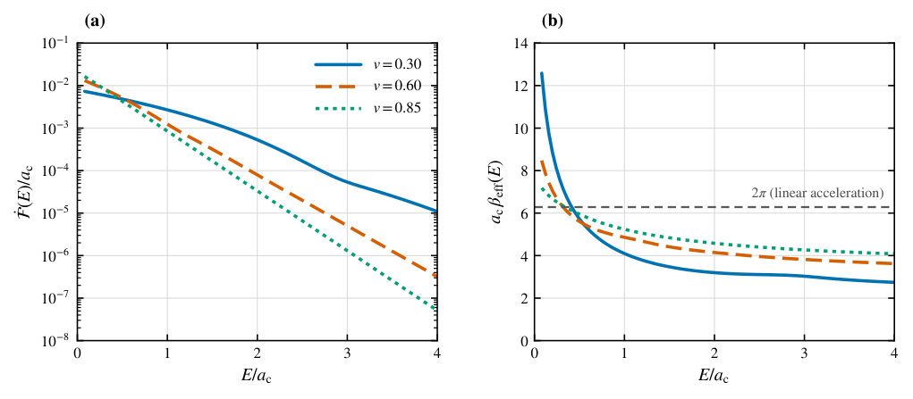
<figcaption class="paper-figure-caption"><b>Fig 1.</b> FIG. 1. Massless circular-detector response in the Minkowski vacuum, at fixed proper acceleration ac, computed from the Hadamard-subtracted expression (110). (a) The excitation rate ˙F(E)/ac, as a function of E/ac, is nonzero for E &gt; 0, but it is not a Planck spectrum. (b) The gap-dependent inverse temperature acβeff(E), with βeff(E) = E−1 ln[ ˙F(−E)/ ˙F(E)]. A KMS state would give a horizontal curve; 2π, the value for linear acceleration at the same proper acceleration, is shown only as a reference. Line color and dashing both identify the tangential speed.</figcaption>
</figure>
</div>

<p><strong>Summary.</strong> This theoretical paper rigorously analyzes quantum field quantization in rotating frames, comparing different mathematical descriptions (rigid vs. TT). It resolves the apparent conflict between the lack of a symmetry-selected vacuum state and the detection of a non-zero, non-thermal signal from a detector in the vacuum. The findings establish a consistent framework for understanding vacuum fluctuations in non-inertial settings.</p>
<p><strong>Why it may be interesting.</strong> This work directly addresses the subtleties of defining vacuum states and thermalization in non-inertial frames, which is critical for understanding quantum field theory in curved or accelerating backgrounds relevant to quantum optics and open quantum systems.</p>
<details>
<summary>Detailed structure</summary>
<p><strong>Main problem.</strong> The paper provides a unified analysis of scalar-field quantization and detector response in relativistic rotating frames, comparing rigid and Trocheris-Takeno (TT) descriptions in Minkowski spacetime.</p>
<p><strong>Main result.</strong> The authors show that while neither rotating time flow selects a global ground state, a circular Unruh-DeWitt detector in the Minkowski vacuum exhibits a stationary, non-thermal response, demonstrating the mutual consistency of these seemingly disparate effects.</p>
<p><strong>Method.</strong> The analysis employs mode decomposition using Bogoliubov coefficients, compares different coordinate representations (rigid vs. TT), and calculates the detector response using Hadamard subtraction.</p>
<p><strong>Model / system.</strong> The system involves a real scalar field quantized in the Minkowski vacuum, coupled to a two-level Unruh-DeWitt detector, analyzed under the influence of rotating coordinates.</p>
<p><strong>Key observables.</strong> Bogoliubov beta coefficients, detector excitation rate spectrum, Minkowski Wightman function, and the non-thermal nature of the detector response.</p>
<p><strong>Important parameters / regimes.</strong> The analysis is performed in the context of Minkowski spacetime, focusing on the comparison between inertial, rigid, and TT modes.</p>
<p><strong>Assumptions / limitations.</strong> The analysis assumes the Minkowski vacuum and makes a crucial distinction between the state definition, time evolution selection, and detector response.</p>
<p><strong>Paper structure.</strong> The paper proceeds by establishing quantization requirements, comparing rigid and TT transformations, demonstrating the failure of these flows to select a global ground state, confirming the mode equivalence via vanishing Bogoliubov coefficients, and finally calculating the non-thermal detector response.</p>
</details>
<details>
<summary>Abstract</summary>
<p>We provide a unified analysis of scalar-field quantization and detector response in relativistic rotating frames, comparing rigid and Trocheris-Takeno (TT) descriptions in unbounded Minkowski spacetime. We distinguish three questions that are often conflated: (i) how a fixed quantum state is represented in rotating coordinates, (ii) whether rotating time evolution selects a global ground state, and (iii) how a rotating detector responds to the vacuum. Coordinate-transformed rigid and TT modes span the same positive-frequency subspace as inertial modes: their Bogoliubov beta coefficients vanish and their mode sums reproduce the Minkowski Wightman function. Neither rotating time flow selects a global scalar ground state, although for different reasons: the rigid generator is not globally timelike and is unbounded below, whereas TT time translation is not a Killing symmetry. Nevertheless, a circular Unruh-DeWitt detector in the Minkowski vacuum has a stationary, nonzero response. We relate this response to negative corotating frequencies, evaluate it after an explicit Hadamard subtraction, and show that it is nonthermal. Thus vanishing Bogoliubov mixing, the absence of a symmetry-selected rotating vacuum, and detector excitation are mutually consistent.</p>
</details>
<p><sub><a href="#top">↑ back to top</a></sub></p>

<p><a id="paper-2609.09583"></a></p>
<h3 id="thermal-quantum-sensing-fisher-information-and-work-beyond-gaussian-signals"><a href="http://arxiv.org/abs/2609.09583v1">Thermal Quantum Sensing: Fisher Information and Work Beyond Gaussian Signals</a></h3>
<p><strong>Authors:</strong> Yash Chitgopekar, Nikolaos Koukoulekidis, Iman Marvian<br>
<strong>Type:</strong> theory · <strong>Category:</strong> statistical mechanics · <strong>PDF:</strong> <a href="https://arxiv.org/pdf/2609.09583v1">https://arxiv.org/pdf/2609.09583v1</a><br>
<strong>Analysis basis:</strong> full PDF text, analyzed in chunks
<strong>Topic relevance:</strong> <code>quantum measurements</code> <strong>2/5</strong> · <code>Keldysh / 2PI / non-Gaussian methods</code> <strong>1/5</strong> · <code>analog quantum simulation</code> <strong>1/5</strong> · <code>driven-dissipative phase transition</code> <strong>1/5</strong> · <code>methods for driven-dissipative</code> <strong>1/5</strong> · <code>non-equilibrium universality</code> <strong>1/5</strong></p>
<div class="figure-strip-hint">↔ Scroll figures horizontally</div>
<div class="paper-figures-scroll">
<figure class="paper-figure-card">
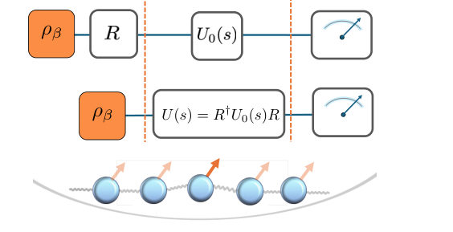
<figcaption class="paper-figure-caption"><b>Fig 1.</b> FIG. 1. Thermal Quantum Sensing. Top: A standard sensing protocol: the sensor is prepared in the Gibbs state ρβ, transformed by a unitary R to obtain the desired initial probe state, evolved under the parameter-dependent unitary U0(s), and finally measured. Middle: An equivalent description used throughout this work, in which the preparation unitary is ab- sorbed into the signal: the sensor is prepared in the Gibbs state ρβ and evolves under U(s) = R†U0(s)R. We study its sensitivity, quantified by various quantum Fisher information metrics, and the work performed by the signal as functions of temperature β−1. Bottom: For continuous-variable sen- sors, such as the motional bosonic modes of...</figcaption>
</figure>
<figure class="paper-figure-card">

<figcaption class="paper-figure-caption"><b>Fig 2.</b> FIG. 2. Hierarchy of information metrics and a finite infinite-temperature limit. As an example, we consider a thermal state of a translationally invariant harmonic chain of N quantum harmonic oscillators in a 1D lattice with periodic boundary conditions and nearest-neighbor interactions as de- scribed by Eq. (163) with N = 10 and coupling κ = 5 · 10−3</figcaption>
</figure>
<figure class="paper-figure-card">
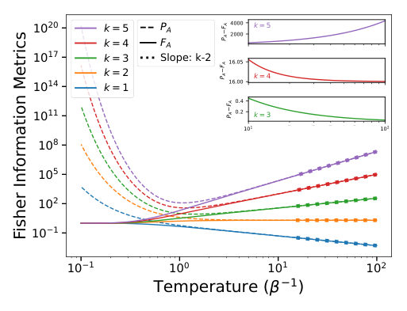
<figcaption class="paper-figure-caption"><b>Fig 3.</b> FIG. 3. Extremal QFI metrics of a single harmonic oscillator for polynomial signals. We plot, as a function of temperature β−1, the minimal (SLD) and maximal (RLD) QFI metrics FAk, PAk for a thermal state of the harmonic oscillator with H = (X2 + P 2)/2 and a signal generated by Ak = ckXk for k = 1, · · · , 5. The normalization factors ck are chosen such that, for every k, the SLD at zero temperature, which is four times the variance of Ak in the ground state, is equal to 1 (see Sec. G for details). In the limit of high temper- ature, the difference between PAk(ρβ) and FAk(ρβ) vanishes for k ≤3, tends to a positive constant for k = 4, and diverges for k ≥5. The slope of the curves for both...</figcaption>
</figure>
<figure class="paper-figure-card">

<figcaption class="paper-figure-caption"><b>Fig 4.</b> FIG. 4. Bounds on ratios of QFI metrics. We plot the bounds from Eqs. (67), (68) and (70) in the top, middle, and bottom panels respectively as functions of temperature for the harmonic chain described in Eq. (163) with N = 10 and cou- pling coefficient κ = 0.5 and a uniform signal Eq. (153). For g = 2.0 and f = 0, the signal A = P</figcaption>
</figure>
<figure class="paper-figure-card">
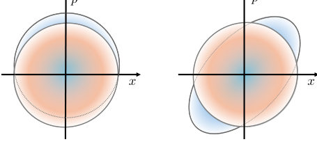
<figcaption class="paper-figure-caption"><b>Fig 5.</b> FIG. 5. Difference between linear and quadratic sig- nals. We depict phase-space representations of the Gibbs state ρβ and its evolved state e−iAsρβeiAs, for a fixed small value of s. For the linear signal A = X (left), the evolution produces a fixed displacement in the momentum direction. In- creasing the temperature broadens the thermal distribution, with its variance scaling as nβ + 1/2, while the displacement remains fixed. Consequently, the displacement becomes negli- gible relative to the width of the distribution, explaining why the QFI vanishes in the infinite-temperature limit. For the quadratic signal A = X2 (right), the evolution produces a squeezing deformation in phase space....</figcaption>
</figure>
</div>

<p><strong>Summary.</strong> This paper develops a theoretical framework to understand quantum sensing in the presence of thermal noise by relating sensing sensitivity (QFI) to the work done. It establishes universal high-temperature limits for various QFI metrics, providing quantitative bounds on how thermal fluctuations affect measurement precision in bosonic systems.</p>
<p><strong>Why it may be interesting.</strong> This work provides rigorous theoretical tools to quantify the fundamental limits of quantum sensing in realistic, noisy (thermal) environments, connecting metrology directly to quantum thermodynamics.</p>
<details>
<summary>Detailed structure</summary>
<p><strong>Main problem.</strong> The paper addresses how thermal fluctuations modify quantum-enhanced sensing and establishes general relationships between sensing sensitivity (QFI) and the work done by a signal in quantum thermodynamics.</p>
<p><strong>Main result.</strong> At high temperatures, various QFI metrics converge to a universal quantity related to the variance of a simple observable, and for quadratic signals, the high-temperature QFI is bounded by the zero-temperature SLD QFI.</p>
<p><strong>Method.</strong> The authors establish general relations between different Quantum Fisher Information (QFI) metrics and the work done, analyzing the system's behavior in the high-temperature limit ($eta 	o 0^+$).</p>
<p><strong>Model / system.</strong> The analysis uses thermal quantum states (Gibbs state $
ho_eta$) subjected to unitary signals $U(s)$. Specific models include 1D harmonic chains of bosonic modes relevant to trapped-ion platforms and continuous-variable Gaussian systems.</p>
<p><strong>Key observables.</strong> Quantum Fisher Information metrics (SLD, RLD, BKM, IA), induced work $W(s)$, and the Purity of Coherence $P_A(
ho_eta)$.</p>
<p><strong>Important parameters / regimes.</strong> Temperature ($T$ or $eta$), signal strength ($s$), and coupling constants ($\kappa, g, f$).</p>
<p><strong>Assumptions / limitations.</strong> The analysis often relies on the high-temperature limit ($eta 	o 0^+$) or the quadratic nature of the signal generator in continuous-variable systems.</p>
<p><strong>Figures summary.</strong> Figures illustrate the sensing protocol and plot various QFI metrics versus temperature, showing their convergence behavior. Tables summarize extremal Bohr frequencies ($\omega_{\pm}$) for different signal types.</p>
<p><strong>Paper structure.</strong> The paper develops general relations connecting QFI metrics to work, analyzes the high-temperature limit for bosonic systems, and applies these concepts to specific models like harmonic chains using both uniform and single-site signal generators.</p>
</details>
<details>
<summary>Abstract</summary>
<p>Understanding how thermal fluctuations modify or suppress quantum-enhanced sensing is a central problem in quantum metrology. Closely related questions arise in quantum thermodynamics, particularly regarding the relation between the work induced by a signal and the information acquired by a sensor. Here, we establish general relations among the sensitivity of thermal quantum states, as quantified by different quantum Fisher information metrics, their temperature dependence, and the work induced by a unitary signal. We further show that, at high temperature, all monotone QFI metrics coincide to leading order with a universal quantity that can be expressed as the variance of a simple observable and itself defines a lesser-known QFI metric. This emergent uniqueness is reminiscent of the uniqueness of classical Fisher information in information geometry. In continuous-variable systems, the infinite-temperature limit is finite and generically non-zero for quadratic Gaussian signals, while it diverges for higher-degree signals. Remarkably, for any purely quadratic signal generator, the infinite-temperature QFI is at least twice the zero-temperature SLD QFI or, equivalently, at least eight times the ground-state variance of the generator. Consequently, the Cramér--Rao lower bound on the estimator variance is reduced by at least a factor of two. We illustrate these results using harmonic chains of bosonic modes relevant to trapped-ion platforms and quantum field-theoretic models.</p>
</details>
<p><sub><a href="#top">↑ back to top</a></sub></p>

<p><a id="paper-2609.09457"></a></p>
<h3 id="a-block-tensor-train-burer-monteiro-framework-for-low-rank-quantum-state-tomography"><a href="http://arxiv.org/abs/2609.09457v1">A Block Tensor Train Burer-Monteiro Framework for Low-Rank Quantum State Tomography</a></h3>
<p><strong>Authors:</strong> Shakir Showkat Sofi, Charlotte Vermeylen, Fatemeh Mohammadi, Lieven De Lathauwer<br>
<strong>Type:</strong> theory · <strong>Category:</strong> numerical methods · <strong>PDF:</strong> <a href="https://arxiv.org/pdf/2609.09457v1">https://arxiv.org/pdf/2609.09457v1</a><br>
<strong>Analysis basis:</strong> full PDF text, analyzed in chunks
<strong>Topic relevance:</strong> <code>methods for driven-dissipative</code> <strong>2/5</strong> · <code>quantum measurements</code> <strong>2/5</strong> · <code>analog quantum simulation</code> <strong>1/5</strong></p>
<div class="figure-strip-hint">↔ Scroll figures horizontally</div>
<div class="paper-figures-scroll">
<figure class="paper-figure-card">

<figcaption class="paper-figure-caption"><b>Fig 1.</b> Fig. 2.1: Basic tensor network diagrams. In the bottom row, double-ring nodes rep- resent block matrices with purple block-layout edges and black inner-matrix edges; block matrices are linked by a purple edge in the strong Kronecker product and a black edge in the C-product.</figcaption>
</figure>
<figure class="paper-figure-card">

<figcaption class="paper-figure-caption"><b>Fig 2.</b> Fig. 2.2: (Left) TTM representation of a matrix X ∈ CI1I2···IN×J1J2···JN . (Right) Block−n−TT representation of a tall matrix X ∈CI1I2···IN×K, or equiva- lently, as a collection of K TT vectors that share all cores, except for the nth core.</figcaption>
</figure>
<figure class="paper-figure-card">
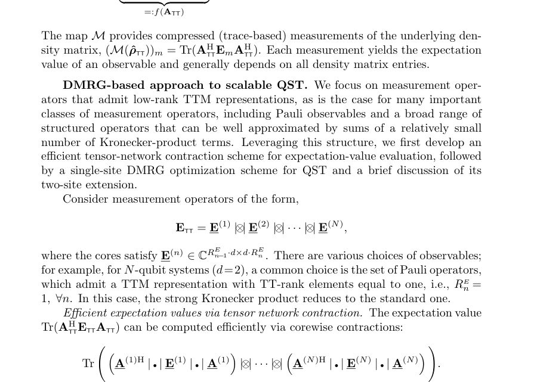
<figcaption class="paper-figure-caption"><b>Fig 3.</b> Figure 3.2 visualizes the tensor network diagram for this operation: the overall contraction between the Block-TT parameterized density operator and the (TTM) measurement operators (left), alongside its equivalent effective-operator form (right).</figcaption>
</figure>
<figure class="paper-figure-card">

<figcaption class="paper-figure-caption"><b>Fig 4.</b> Fig. 3.2: (Left) Core-wise contraction of the tensor network representing the ex- pectation value computation, i.e., Tr(AH TT ETT ATT). (Right) Equivalent tensor net- work representation of the same operation in terms of an effective operator, i.e., Tr(A(n)H [1,2,4;3] E(n) eff A(n) [1,2,4;3]), where E(n) eff = AH ̸=n ETT A̸=n ∈CRn−1dRn×Rn−1dRn.</figcaption>
</figure>
<figure class="paper-figure-card">
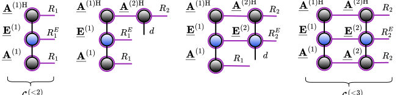
<figcaption class="paper-figure-caption"><b>Fig 5.</b> Fig. 3.3: Optimal ordering of the tensor network contractions needed to compute the left and right environments recursively; see (3.6).</figcaption>
</figure>
</div>

<p><strong>Summary.</strong> This paper introduces a novel Block Tensor Train (Block-TT) framework to perform Quantum State Tomography (QST) for high-dimensional quantum systems. By parameterizing the density matrix using a low-rank tensor network, it bypasses the exponential scaling problem inherent in standard methods. This allows for accurate state reconstruction using efficient, physically constrained tensor-network algorithms.</p>
<p><strong>Why it may be interesting.</strong> This work directly addresses the computational bottleneck in characterizing quantum states, which is crucial for simulating and understanding complex quantum many-body systems beyond the reach of full density matrix methods.</p>
<details>
<summary>Detailed structure</summary>
<p><strong>Main problem.</strong> The core problem is Quantum State Tomography (QST): reconstructing a quantum state ($
ho$) from measurement data, which is computationally intractable due to the exponential growth of the density matrix size with the number of qubits.</p>
<p><strong>Main result.</strong> The authors propose a Block Tensor Train (Block-TT) Burer-Monteiro framework that parameterizes the density matrix, reducing the optimization variables from exponential to linear in the number of qubits while guaranteeing physical constraints.</p>
<p><strong>Method.</strong> The method employs a low-rank tensor-network factorization (Block-TT) applied to the density matrix, enabling the use of efficient tensor-network contractions and developing DMRG-like algorithms for state estimation.</p>
<p><strong>Model / system.</strong> The system is a general quantum system whose state is described by a density matrix ($
ho$). The model focuses on representing this state using a low-rank tensor-network structure (Block-TT) to manage high dimensionality.</p>
<p><strong>Key observables.</strong> The density matrix ($
ho$), expectation values ($   ext{Tr}(
ho E_m)$), and local Bloch vectors.</p>
<p><strong>Important parameters / regimes.</strong> The rank of the tensor decomposition, the number of qubits ($N$), and the measurement settings (e.g., window/stride configurations in simulations).</p>
<p><strong>Assumptions / limitations.</strong> The primary assumption is that the quantum state ($
ho$) is low-rank, allowing for the successful application of the Block-TT factorization.</p>
<p><strong>Figures summary.</strong> Figure 2.1 illustrates basic tensor network diagrams showing block matrices linked by strong Kronecker products and C-products, which are fundamental to the tensor representation.</p>
<p><strong>Paper structure.</strong> The paper establishes the QST problem and its dimensionality curse, introduces the Block-TT Burer-Monteiro factorization as the solution, details the resulting DMRG-like algorithms, and validates the method using numerical experiments on state reconstruction.</p>
</details>
<details>
<summary>Abstract</summary>
<p>Quantum state tomography is a fundamental technique for estimating the state of a quantum system from measured data and plays a crucial role in evaluating the performance of quantum devices. However, standard estimation methods become computationally prohibitive as the system size increases due to the exponential growth of the density matrix, describing a quantum state, with the number of qubits. We propose a low-rank tensor-network framework for mixed-state quantum state tomography based on a block tensor train (Block-TT) factorization. Specifically, the density matrix is represented as the contraction of a Block-TT with its Hermitian transpose, yielding a TT analogue of the Burer-Monteiro factorization. This parameterization guarantees Hermiticity and positive semidefiniteness by construction while compressing the number of optimization variables from exponential to linear in the number of qubits. Building on this representation, we develop single-site and two-site density matrix renormalization group (DMRG) algorithms for estimating quantum states from compressed measurements. The resulting methods operate directly on the compressed parameterization, support adaptive rank refinement, and exploit efficient tensor-network contractions for expectation-value evaluation. The framework is applicable to a broad class of low-rank quantum states, including pure states, nearly pure states, and ground states that admit accurate tensor-network approximations. Numerical experiments demonstrate accurate state reconstruction from limited measurements together with substantial reductions in memory requirements and computational cost compared with conventional low-rank tomography methods.</p>
</details>
<p><sub><a href="#top">↑ back to top</a></sub></p>

<p><a id="paper-2609.09594"></a></p>
<h3 id="coarse-graining-to-create-minimalist-models-for-dynamic-end-linked-star-polymer-networks"><a href="http://arxiv.org/abs/2609.09594v1">Coarse-graining to create minimalist models for dynamic, end-linked star-polymer networks</a></h3>
<p><strong>Authors:</strong> Tyla R. Holoman, C. Levi Petix, Michael P. Howard, Thomas M. Truskett<br>
<strong>Type:</strong> theory · <strong>Category:</strong> statistical mechanics · <strong>PDF:</strong> <a href="https://arxiv.org/pdf/2609.09594v1">https://arxiv.org/pdf/2609.09594v1</a><br>
<strong>Analysis basis:</strong> full PDF text, analyzed in chunks
<strong>Topic relevance:</strong> <code>Keldysh / 2PI / non-Gaussian methods</code> <strong>2/5</strong> · <code>analog quantum simulation</code> <strong>1/5</strong> · <code>methods for driven-dissipative</code> <strong>1/5</strong></p>
<div class="figure-strip-hint">↔ Scroll figures horizontally</div>
<div class="paper-figures-scroll">
<figure class="paper-figure-card">

<figcaption class="paper-figure-caption"><b>Fig 1.</b> FIG. 1. Schematic of fine-grained (FG) and coarse-grained (CG) models for tetra-PEG.</figcaption>
</figure>
<figure class="paper-figure-card">
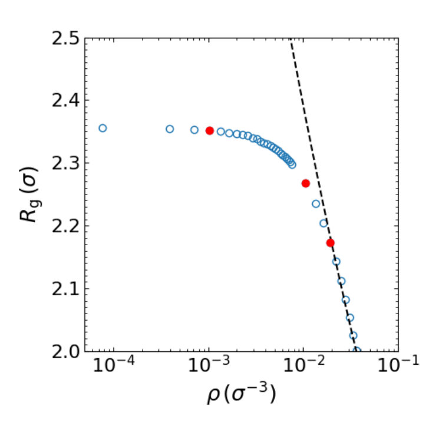
<figcaption class="paper-figure-caption"><b>Fig 2.</b> FIG. 2. Crossover from dilute to semidilute conditions. Radius of gyration for the FG</figcaption>
</figure>
<figure class="paper-figure-card">
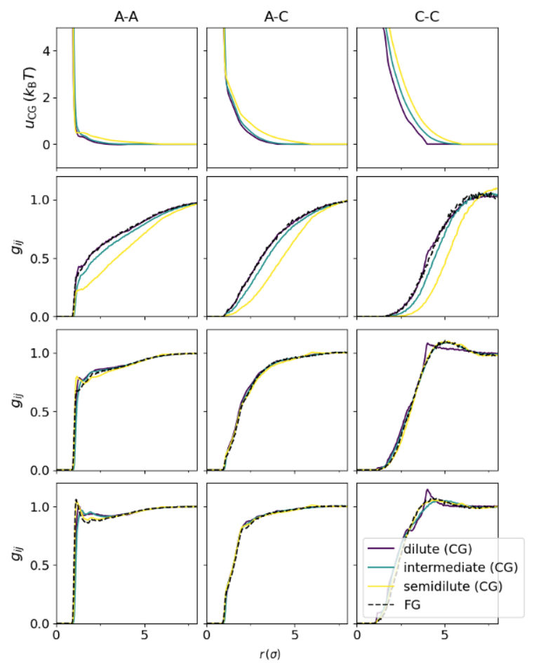
<figcaption class="paper-figure-caption"><b>Fig 3.</b> FIG. 3. Transferability of CG model. Top row: CG pair potential uCG as a function of</figcaption>
</figure>
<figure class="paper-figure-card">
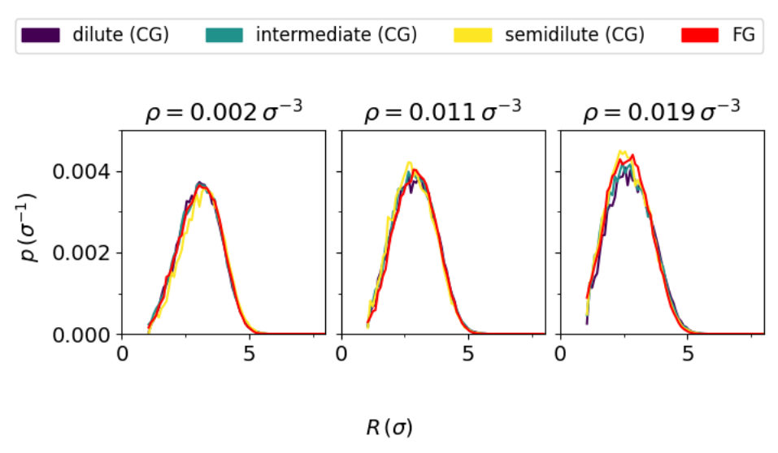
<figcaption class="paper-figure-caption"><b>Fig 4.</b> FIG. 4. Intra-star correlations. Probability density p of arm length R in the CG and FG models</figcaption>
</figure>
<figure class="paper-figure-card">

<figcaption class="paper-figure-caption"><b>Fig 5.</b> FIG. 5. Inter-star bonding motifs. Total number of bonds and number of bonds for different</figcaption>
</figure>
</div>

<p><strong>Summary.</strong> This work develops a coarse-grained model for dynamic star-polymer networks by mapping a detailed bead-spring simulation onto a much simpler 5-bead model using relative-entropy minimization. The authors demonstrate that the simplified model accurately predicts key structural and phase behaviors of the complex system across different concentrations. This research highlights the fundamental trade-offs inherent in multiscale modeling, balancing computational efficiency against physical accuracy.</p>
<p><strong>Why it may be interesting.</strong> While focused on classical polymer physics, the rigorous application of relative entropy and the systematic reduction of degrees of freedom mirrors techniques used in developing effective Hamiltonians in quantum many-body systems, which is relevant for understanding complex quantum dynamics.</p>
<details>
<summary>Detailed structure</summary>
<p><strong>Main problem.</strong> The primary goal is to develop and validate minimalist, coarse-grained models for complex, dynamic star-polymer networks to predict their macroscopic behavior while managing the trade-off between model simplicity and accuracy.</p>
<p><strong>Main result.</strong> The coarse-grained model successfully reproduces the structural correlations and phase behavior of the fine-grained model across various densities, demonstrating the transferability of the mapping.</p>
<p><strong>Method.</strong> The study employs relative-entropy coarse-graining, minimizing the relative entropy between the fine-grained and coarse-grained ensembles to derive effective parameters for the simplified model.</p>
<p><strong>Model / system.</strong> The system consists of dynamic, end-associating four-armed poly(ethylene glycol) (tetra-PEG) macromers forming gel networks. Two models are compared: a detailed bead-spring (fine-grained) model and a simplified 5-bead (coarse-grained) model.</p>
<p><strong>Key observables.</strong> Structural correlations, network connectivity, phase behavior, and the root mean squared radius of gyration ($\langle R_g^2 
angle^{1/2}$).</p>
<p><strong>Important parameters / regimes.</strong> Concentrations ($
ho$) at dilute, intermediate, and semidilute regimes; the relative entropy $S_{rel}(	heta)$.</p>
<p><strong>Assumptions / limitations.</strong> The coarse-graining mapping assigns specific beads from the fine-grained model to the coarse-grained beads, and the parametrization relies on minimizing relative entropy.</p>
<p><strong>Figures summary.</strong> Figure 1 schematically compares the bead representations and potentials of the FG and CG models. Figure 2 shows the $\langle R_g^2 
angle^{1/2}$ dependence on density for the FG model, highlighting the parametrization points.</p>
<p><strong>Paper structure.</strong> The paper first introduces the physical system and the need for simplification. It details the relative-entropy coarse-graining methodology, followed by simulations comparing the two model types across different densities. The discussion focuses on the resulting trade-offs between model complexity and predictive power.</p>
</details>
<details>
<summary>Abstract</summary>
<p>Although minimalist models for patchy attractive particles have revealed powerful design rules for how particle valence directs colloidal assembly, less work has focused on comparably simple models of reversible, network-forming star polymers. Here, we use relative-entropy coarse-graining and simulation results from finer-resolution bead--spring star polymers to generate 5-bead models of dynamic, end-associating four-armed poly(ethylene glycol) macromers. Our results comparing structural correlations, network connectivity, and phase behavior of the coarse- and fine-grained models provide insight into how the accuracy and transferability of the coarse-grained models depend on the state point chosen for coarse-graining. The results also reveal intrinsic trade-offs between reducing degrees of freedom and expanding the range of effective interactions in coarse-graining that impact the total number of pairwise interactions in the resulting model, with implications for its computational efficiency.</p>
</details>
<p><sub><a href="#top">↑ back to top</a></sub></p>

<p><a id="paper-2609.09383"></a></p>
<h3 id="emergent-electronic-bond-order-wave-in-a-quasi-one-dimensional-chain"><a href="http://arxiv.org/abs/2609.09383v1">Emergent Electronic Bond-Order Wave in a Quasi-One-Dimensional Chain</a></h3>
<p><strong>Authors:</strong> Honghao Wang, Tristan R. Cao, Pedro Schlottmann, Gang Cao<br>
<strong>Type:</strong> experiment · <strong>Category:</strong> strongly correlated electrons · <strong>PDF:</strong> <a href="https://arxiv.org/pdf/2609.09383v1">https://arxiv.org/pdf/2609.09383v1</a><br>
<strong>Analysis basis:</strong> full PDF text, analyzed in chunks
<strong>Topic relevance:</strong> <code>Frenkel-Kontorova</code> <strong>2/5</strong> · <code>analog quantum simulation</code> <strong>1/5</strong> · <code>driven-dissipative phase transition</code> <strong>1/5</strong></p>
<div class="figure-strip-hint">↔ Scroll figures horizontally</div>
<div class="paper-figures-scroll">
<figure class="paper-figure-card">
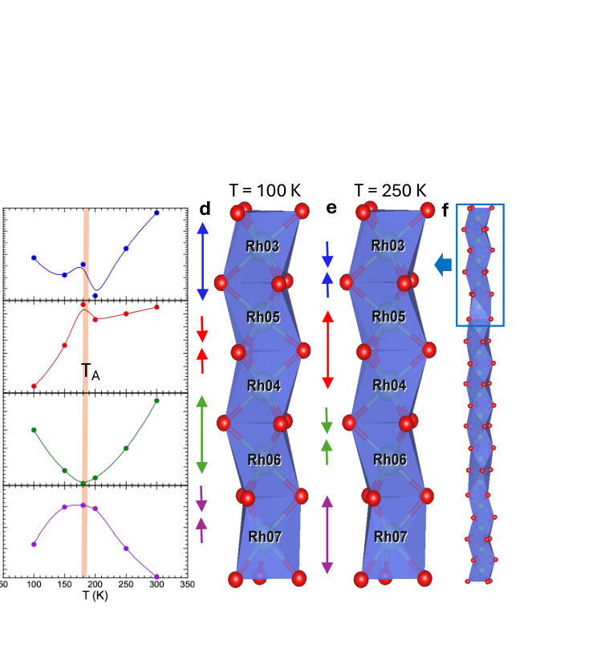
<figcaption class="paper-figure-caption"><b>Fig 1.</b> Figure 1</figcaption>
</figure>
<figure class="paper-figure-card">

<figcaption class="paper-figure-caption"><b>Fig 2.</b> Figure 2</figcaption>
</figure>
<figure class="paper-figure-card">

<figcaption class="paper-figure-caption"><b>Fig 3.</b> Figure 3</figcaption>
</figure>
<figure class="paper-figure-card">

<figcaption class="paper-figure-caption"><b>Fig 4.</b> Figure 4</figcaption>
</figure>
<figure class="paper-figure-card">

<figcaption class="paper-figure-caption"><b>Fig 5.</b> Figure 5</figcaption>
</figure>
</div>

<p><strong>Summary.</strong> This work investigates the emergence of a Bond-Order Wave (BOW) in the 1D material $   ext{Ba}<em 24>9   ext{Rh}_8   ext{O}</em>$, demonstrating that structural bonds become active electronic degrees of freedom. A transition at $T_A \approx 180 	ext{ K}$ is marked by a unique bond inversion and the development of nonvolatile, memory-effect electrical switching. This establishes bond-centered electronic order as a key organizing principle for quantum matter in low dimensions.</p>
<p><strong>Why it may be interesting.</strong> The concept of bond-centered electronic order as a new organizing principle, which can be probed via structural changes and electrical switching, offers an analogy to charge density wave physics but with a distinct structural signature (bond inversion).</p>
<details>
<summary>Detailed structure</summary>
<p><strong>Main problem.</strong> The primary challenge addressed is stabilizing collective electronic order in one dimension (1D) against strong thermal fluctuations that typically suppress symmetry-breaking states.</p>
<p><strong>Main result.</strong> The authors report the emergence of a Bond-Order Wave (BOW) in $   ext{Ba}<em 24>9   ext{Rh}_8   ext{O}</em>$, characterized by a structural bond inversion across a transition temperature $T_A \approx 180 	ext{ K}$. This transition establishes bond-centered electronic order, leading to nonvolatile memristive switching.</p>
<p><strong>Method.</strong> The study employs a combination of techniques, including single-crystal X-ray diffraction, heat-capacity measurements, dielectric response analysis, and nonlinear transport measurements.</p>
<p><strong>Model / system.</strong> The physical system is the quasi-one-dimensional material $ ext{Ba}<em 24>9   ext{Rh}_8   ext{O}</em>$, which is analyzed in the context of electronic bond order, suggesting a connection to the extended Hubbard model.</p>
<p><strong>Key observables.</strong> Bond inversion (short $\leftrightarrow$ long bond interchange), heat-capacity anomaly, suppression of dielectric loss ($\epsilon''$), and nonlinear I-V hysteresis loops with remnant voltage ($V_m$).</p>
<p><strong>Important parameters / regimes.</strong> Transition temperature $T_A \approx 180 	ext{ K}$; the system operates in a regime where structural bonds become active electronic degrees of freedom.</p>
<p><strong>Assumptions / limitations.</strong> The transition is argued to be a condensation from a dynamic bond liquid to a rigid BOW, distinct from conventional Peierls dimerization or purely magnetic ordering.</p>
<p><strong>Figures summary.</strong> Figures illustrate the structural bond inversion across $T_A$, the suppression of dielectric response ($\epsilon'$ and $\epsilon''$) below $T_A$, and the development of characteristic clockwise hysteresis in I-V curves below $T_A$.</p>
<p><strong>Paper structure.</strong> The paper systematically analyzes anomalies across multiple probes (structural, thermodynamic, dielectric, transport) near $T_A$, building a case that the common origin is the reorganization of the Rh-Rh bond network into a rigid BOW state.</p>
</details>
<details>
<summary>Abstract</summary>
<p>Collective order is notoriously difficult to stabilize in one dimension, where strong fluctuations suppress symmetry-breaking states. Here we report the emergence of an electronic bond-order wave (BOW) in the quasi-one-dimensional (1D) material Ba9Rh8O24, in which structural bonds become active electronic degrees of freedom that overcome 1D fluctuations to establish long-range order. Single-crystal X-ray diffraction uncovers a striking inversion of inequivalent Rh-Rh bonds across a transition TA = 180 K, where short and long bonds interchange their identities rather than undergoing conventional Peierls dimerization. This bond inversion coincides with a heat-capacity anomaly and a profound reorganization of the dielectric response with strong suppression of dielectric loss upon cooling. The BOW exhibits strongly nonlinear, frequency-dependent I-V characteristics, clockwise hysteresis, and nonvolatile memristive switching. These findings uncover an unprecedented transformation from a dynamic bond liquid to a rigid yet electrically reconfigurable BOW, establishing bond-centered electronic order as a new organizing principle for 1D quantum matter.</p>
</details>
<p><sub><a href="#top">↑ back to top</a></sub></p>

<p><a id="paper-2609.09936"></a></p>
<h3 id="configurational-space-separation-and-structure-selection-in-three-hard-squares"><a href="http://arxiv.org/abs/2609.09936v1">Configurational-space separation and structure selection in three hard squares</a></h3>
<p><strong>Authors:</strong> Yuheng Yang, Meng Xiao, Duanduan Wan<br>
<strong>Type:</strong> theory · <strong>Category:</strong> statistical mechanics · <strong>PDF:</strong> <a href="https://arxiv.org/pdf/2609.09936v1">https://arxiv.org/pdf/2609.09936v1</a><br>
<strong>Analysis basis:</strong> full PDF text, analyzed in chunks
<strong>Topic relevance:</strong> <code>analog quantum simulation</code> <strong>2/5</strong> · <code>methods for driven-dissipative</code> <strong>1/5</strong></p>
<div class="figure-strip-hint">↔ Scroll figures horizontally</div>
<div class="paper-figures-scroll">
<figure class="paper-figure-card">
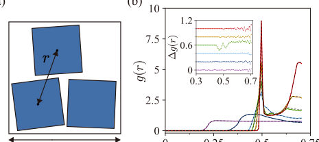
<figcaption class="paper-figure-caption"><b>Fig 1.</b> FIG. 1. (a) Schematic illustration of three hard squares in a two-dimensional periodic box. The variable r denotes the center-to-center distance between two squares. (b) Ra- dial distribution function g(r) for packing fractions ϕ = 0.1, 0.3, 0.55, 0.6, 0.65, and 0.7 (increasing from bottom to top). Gray dashed lines show the results from uniform inser- tion sampling, while solid lines correspond to MCMC results. Inset: the difference ∆g(r) between the two methods; curves are vertically offset by 0.2 for clarity.</figcaption>
</figure>
<figure class="paper-figure-card">
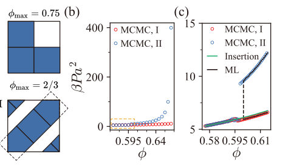
<figcaption class="paper-figure-caption"><b>Fig 2.</b> FIG. 2. (a) Maximally packed configurations for two distinct configuration classes, I and II, with ϕmax = 0.75 and 2/3, re- spectively. (b) Pressure βPa2 as a function of packing fraction ϕ, obtained from MCMC simulations initialized from config- uration classes I and II, respectively. (c) Zoomed-in view of the region highlighted by the orange dashed box in (b), with additional simulation points. The green line shows the results obtained from the uniform insertion method. The black lines indicate the two branches classified by machine learning. The vertical dashed black line marks ϕ = 0.6.</figcaption>
</figure>
<figure class="paper-figure-card">
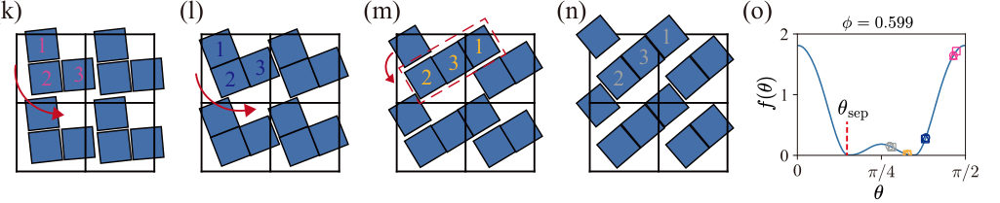
<figcaption class="paper-figure-caption"><b>Fig 3.</b> FIG. 3. Transition pathways between the two configuration classes. (a)–(d) Representative configurations along an MCMC transition from the larger configuration-space region associated with class I to the smaller region associated with class II at ϕ = 0.59. In (a) and (b), the red arrows indicate the subsequent rotation of square 3. In (c), the three squares have nearly the same orientation, as highlighted by the dashed red rectangle; the red arrow indicates their subsequent collective rotation. (e) Area-normalized probability density f(θ) of the square orientation angle θ at ϕ = 0.59, obtained from uniform insertion sampling and normalized such that R π/2 0 f(θ) dθ = 1. Here, θ is defined...</figcaption>
</figure>
<figure class="paper-figure-card">

<figcaption class="paper-figure-caption"><b>Fig 4.</b> FIG. 4. Definition and distributions of the local order pa- rameter d/a. (a) Definition of d. For a reference square, we consider its four adjacent square regions, indicated by dashed outlines. If the center of mass of another square or one of its periodic images lies within one of these regions, it is projected perpendicularly onto the corresponding side of the reference square. The signed distance between the projection point and the midpoint of that side is defined as d (red segment), with the positive direction chosen to follow the clockwise orienta- tion around the reference square. (b) Representative config- urations with d = 0 and d = a/2. (c) Normalized frequency f(d/a) as a...</figcaption>
</figure>
</div>

<p><strong>Summary.</strong> This work analyzes the structural behavior of three hard squares in 2D, demonstrating that excluded-volume interactions cause the system's available configuration space to split into two disconnected regions above a critical packing fraction ($\phi_{sep}=3/5$). The study uses advanced simulation techniques to map these distinct structural classes, showing how simple geometry dictates complex structural ordering reminiscent of lattice formation.</p>
<p><strong>Why it may be interesting.</strong> Although the system is classical, the demonstration that signatures of many-body self-assembly (like lattice ordering) emerge robustly from simple excluded-volume geometry in a few-particle limit provides a powerful analogy for understanding complex many-body quantum ground states.</p>
<details>
<summary>Detailed structure</summary>
<p><strong>Main problem.</strong> The study investigates how excluded-volume constraints alone can govern configurational connectivity and local structure selection in a minimal, few-particle system.</p>
<p><strong>Main result.</strong> The system exhibits a clear separation in its allowed configurational space at a critical packing fraction ($\phi_{sep}=3/5$), leading to distinct structural motifs (L-shaped vs. staggered) at higher densities.</p>
<p><strong>Method.</strong> The research employs Monte Carlo simulations (MCMC) and uniform non-overlapping insertion sampling to probe the configurational space, supplemented by geometric analysis and machine learning classification.</p>
<p><strong>Model / system.</strong> The model consists of three hard squares confined within a two-dimensional periodic box, allowing the study of excluded-volume interactions.</p>
<p><strong>Key observables.</strong> Radial distribution functions ($g(r)$), pressure measurements, configurational-space volume ratios, and local order parameters ($d/a$).</p>
<p><strong>Important parameters / regimes.</strong> Packing fraction ($\phi$), the separation density ($\phi_{sep} = 3/5$), and the particle number ($N=3$).</p>
<p><strong>Assumptions / limitations.</strong> The discrepancy between MCMC and uniform sampling at intermediate densities is interpreted as the MCMC sampling being confined to one disconnected region of the allowed phase space.</p>
<p><strong>Figures summary.</strong> Figures compare $g(r)$ from different sampling methods, show pressure vs. $\phi$ revealing two distinct branches (Class I and Class II), and illustrate explicit transition pathways connecting the two configuration classes.</p>
<p><strong>Paper structure.</strong> The paper progresses by first observing discrepancies in statistical measurements ($g(r)$, pressure) near $\phi=0.6$, attributing this to configurational separation. It then constructs explicit transition pathways and uses classification methods to map the two distinct configuration classes (Class I and Class II) that govern the system's behavior above $\phi_{sep}$.</p>
</details>
<details>
<summary>Abstract</summary>
<p>Self-assembly of hard particles with diverse shapes gives rise to a rich variety of structures through excluded-volume constraints alone. Here we show that even a minimal system of three hard squares confined in a two-dimensional periodic box exhibits nontrivial configurational behavior relevant to structure selection. As the packing fraction increases, radial distribution functions obtained from Markov-chain Monte Carlo and uniform non-overlapping insertion sampling agree at low densities, deviate markedly over an intermediate range, and converge again at higher densities. Pressure measurements provide strong numerical evidence that the discrepancy originates from the separation of the allowed configurational space into two disconnected regions above a characteristic density. We identify the separation density as $φ_{\rm sep}=3/5$, construct explicit overlap-free transition pathways connecting the two regions immediately below it, and quantify their relative configurational-space volumes. At higher packing fractions, an approximately L-shaped arrangement of the particle centers becomes strongly favored over a staggered one, revealing a structural motif characteristic of tetratic and square-lattice ordering in larger hard-square systems. These results show that excluded-volume geometry can govern both configurational connectivity and local structure selection even in a three-particle system, revealing how signatures of many-particle self-assembly can already emerge in the few-particle limit.</p>
</details>
<p><sub><a href="#top">↑ back to top</a></sub></p>

<p><a id="paper-2609.10027"></a></p>
<h3 id="entanglement-entropy-of-interacting-scalar-theories-on-fuzzy-spaces"><a href="http://arxiv.org/abs/2609.10027v1">Entanglement Entropy of Interacting Scalar Theories on Fuzzy Spaces</a></h3>
<p><strong>Authors:</strong> A. Allouche, D. Dou<br>
<strong>Type:</strong> theory · <strong>Category:</strong> statistical mechanics · <strong>PDF:</strong> <a href="https://arxiv.org/pdf/2609.10027v1">https://arxiv.org/pdf/2609.10027v1</a><br>
<strong>Analysis basis:</strong> full PDF text, analyzed in chunks
<strong>Topic relevance:</strong> <code>Keldysh / 2PI / non-Gaussian methods</code> <strong>2/5</strong> · <code>analog quantum simulation</code> <strong>1/5</strong></p>
<div class="figure-strip-hint">↔ Scroll figures horizontally</div>
<div class="paper-figures-scroll">
<figure class="paper-figure-card">
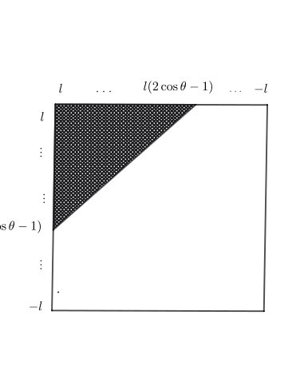
<figcaption class="paper-figure-caption"><b>Fig 1.</b> Figure 1: Degrees of freedom on the sphere and their matrix counterparts.</figcaption>
</figure>
<figure class="paper-figure-card">
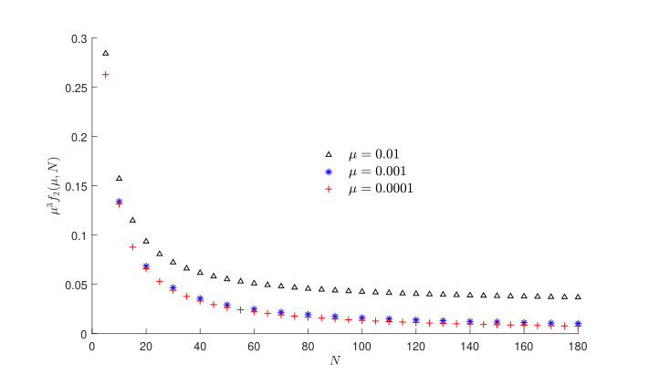
<figcaption class="paper-figure-caption"><b>Fig 2.</b> Figure 2: The rescaled dimensionless function µ3fn(µ, N) as a function of N, for different values of the mass parameters and n = 2.</figcaption>
</figure>
<figure class="paper-figure-card">

<figcaption class="paper-figure-caption"><b>Fig 3.</b> Figure 3: The zero-mode-projected rescaled function ˜fn(µ, N) plotted as a function of N for µ = 0.001 and different values of n.</figcaption>
</figure>
<figure class="paper-figure-card">

<figcaption class="paper-figure-caption"><b>Fig 4.</b> Figure 4: The rescaled dimensionless function fn(q, µ, N) plotted as a function of q for µ = 0.001, different values of n, and N = 220.</figcaption>
</figure>
<figure class="paper-figure-card">
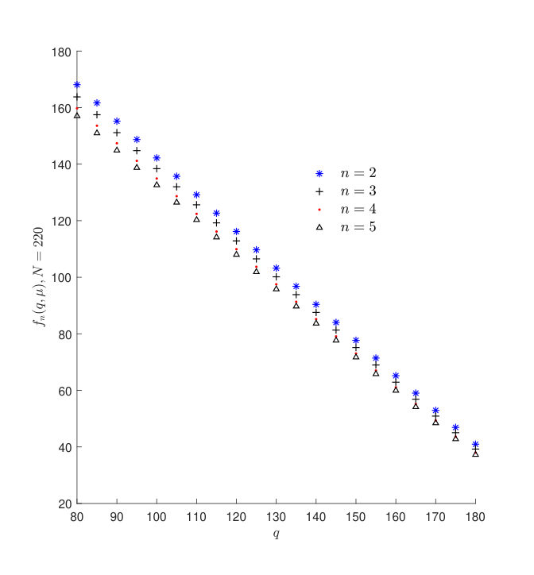
<figcaption class="paper-figure-caption"><b>Fig 5.</b> Figure 4 shows fn(µ, q, N) for n = 2, 3, 4, 5, with µ = 0.001 and N = 220, as a function of q over the range 80 ≤q ≤180. It is readily apparent that the three curves corresponding to different values of n are well fitted by straight lines with nearly identical slopes. As n</figcaption>
</figure>
</div>

<p><strong>Summary.</strong> This work calculates the first-order correction to the entanglement entropy for a scalar field theory on fuzzy spaces due to quartic self-interactions. The key finding is that interactions introduce an extensive bulk contribution to the entropy, deviating from the free theory's area law scaling. The analysis connects these bulk features to the phenomenon of UV/IR mixing in noncommutative quantum field theories.</p>
<p><strong>Why it may be interesting.</strong> The study of entanglement entropy in non-commutative or fuzzy geometries provides theoretical tools for understanding how spatial quantization affects fundamental quantum information measures, which is relevant to quantum gravity and condensed matter models.</p>
<details>
<summary>Detailed structure</summary>
<p><strong>Main problem.</strong> The paper investigates how self-interactions modify the entanglement entropy of a scalar field theory defined on fuzzy spaces.</p>
<p><strong>Main result.</strong> The interaction correction introduces an extensive bulk contribution to the entanglement entropy, departing from the area law characteristic of the free theory.</p>
<p><strong>Method.</strong> The authors use a first-order perturbative correction calculation based on the Green's function approach and spectral sums over the fuzzy Laplacian.</p>
<p><strong>Model / system.</strong> The system is a scalar field theory on (2+1)-dimensional spacetimes whose spatial sections are modeled by fuzzy spaces, specifically the fuzzy sphere and fuzzy disc. The interaction is modeled by a $\lambda\phi^4$ term.</p>
<p><strong>Key observables.</strong> Rényi and entanglement entropies ($S_n$, $S_{ent}$), and the perturbative correction $\delta S^{(1)}_{ent}$.</p>
<p><strong>Important parameters / regimes.</strong> The noncommutativity parameter ($   heta$), the coupling constant ($\lambda$), and the zero-mode projection.</p>
<p><strong>Assumptions / limitations.</strong> The calculation is restricted to the first-order perturbative correction, and the zero-mode IR divergence must be explicitly projected out to yield physical results.</p>
<p><strong>Paper structure.</strong> The paper first establishes the free theory entanglement entropy (area law) and then calculates the first-order correction due to $\lambda\phi^4$ interactions. It analyzes this correction in different limits (commutative continuum and Moyal plane) and discusses the implications for UV/IR mixing.</p>
</details>
<details>
<summary>Abstract</summary>
<p>We investigate the impact of self-interactions on the Rényi and entanglement entropies of a scalar field on $(2+1)$-dimensional spacetimes, whose spatial sections are modeled by fuzzy spaces, specifically the fuzzy sphere and the fuzzy disc. We compute the first-order perturbative correction induced by a $λφ^4$ interaction using the Green's function approach. In contrast to the free theory, where the entanglement entropy is dominated by degrees of freedom near the entangling boundary and obeys an area law, we find that the interaction correction has an extensive bulk contribution, receiving significant contributions from degrees of freedom throughout the fuzzy space. For the fuzzy sphere, the correction exhibits strong infrared sensitivity associated with the zero mode. We isolate and resolve this zero-mode IR divergence by projecting out the zero mode, thereby obtaining a physically meaningful quantity. In the commutative continuum limit, the interaction correction has the same degree of UV divergence as the free entropy but does not obey a pure area law. Furthermore, we analyze the Moyal plane limit, where the interaction correction exhibits a distinct IR divergence. We discuss the physical origin of these extensive bulk features and examine their possible connection to the celebrated UV/IR mixing phenomenon in noncommutative quantum field theories.</p>
</details>
<p><sub><a href="#top">↑ back to top</a></sub></p>

<p><a id="paper-2609.09304"></a></p>
<h3 id="multivariate-quantum-state-preparation-with-optimized-tensor-networks"><a href="http://arxiv.org/abs/2609.09304v1">Multivariate quantum state preparation with optimized tensor networks</a></h3>
<p><strong>Authors:</strong> Matthew L. Sims-Goh, Lukasz Cincio, Annina Z. Lieberherr, Mekena McGrew, Thomas R. Bromley<br>
<strong>Type:</strong> theory · <strong>Category:</strong> numerical methods · <strong>PDF:</strong> <a href="https://arxiv.org/pdf/2609.09304v1">https://arxiv.org/pdf/2609.09304v1</a><br>
<strong>Analysis basis:</strong> full PDF text, analyzed in chunks
<strong>Topic relevance:</strong> <code>methods for driven-dissipative</code> <strong>2/5</strong> · <code>analog quantum simulation</code> <strong>1/5</strong></p>
<div class="figure-strip-hint">↔ Scroll figures horizontally</div>
<div class="paper-figures-scroll">
<figure class="paper-figure-card">

<figcaption class="paper-figure-caption"><b>Fig 1.</b> FIG. 1. Summary of our approach. (a) Our approach to tensor network structure discovery (Section III) begins with the calculation of affinity matrices (left), which quantify the correlation between qubits for the desired state. These are used to recursively partition qubits (middle), assigning qubit indices to branches in a way that seeks to minimize graph distance between highly entangled qubits. This tree structure is then employed in tensor cross-interpolation (right), yielding an interpolative tensor network approximation of the desired function. (b) We demonstrate how to synthesize a quantum circuit from this tensor network (Section IV). Our approach adaptively modifies circuit...</figcaption>
</figure>
<figure class="paper-figure-card">

<figcaption class="paper-figure-caption"><b>Fig 2.</b> FIG. 2. Tensor networks for function encoding. (a) The interleaved (top) and serial (bottom) representations, de- picted for D = 2 dimensions. (b) Distance between closely correlated bits of the same variable. We depict how sequen- tial bits of the same variable are separated by D bonds in the interleaved representation, while the serial representation will separate the highest-significance bits of two adjacent vari- ables by B bonds. In both cases, this leads to many bond crossings that may be avoided by more problem-tailored net- work topologies. (c) Examples of the diverse range of tensor network structures common in the literature. Pictured are MPS (linear chain structure), TTN (acyclic...</figcaption>
</figure>
<figure class="paper-figure-card">

<figcaption class="paper-figure-caption"><b>Fig 3.</b> FIG. 3. Comparison of tensor network structures on an example problem. We demonstrate the approximation of a 40-qubit quantum state encoding a strongly correlated (η = 1) quadrivariate normal distribution N(⃗µ,Σ)(a, b, c, d), for a single realization of Σ ∼LKJD=4(η = 1) at B = 10 bits of precision per variable. TCI is performed with an MPS (blue), comb TTN (orange), and scent-optimized TTN (green) at tolerance ϵid = 10−8. (a) Convergence of the ten- sor network size in TCI — all three topologies converge within 5 sweeps, their sizes plateauing. Relative to MPS, the comb TTN compresses the function by a factor of 23, whereas the scent-optimized TTN compresses it by a factor of 58. (b)...</figcaption>
</figure>
<figure class="paper-figure-card">

<figcaption class="paper-figure-caption"><b>Fig 4.</b> FIG. 5. Convergence of Monte Carlo sampling to con- struct the affinity matrix. Here, we study the approxima- tion of a 40-qubit quantum state encoding a strongly corre- lated quadrivariate normal distribution N(⃗µ,Σ)(a, b, c, d), for a single realization of Σ ∼LKJD=4(η = 1) (as in Figure 3) using both Monte Carlo and exact methods for scent. (a) Single-variable submatrices of affinity matrices constructed with Monte Carlo for Ns = 5 × 102 samples (left), Ns = 104 samples (middle), and noiseless tensor network methods (right). (b) Convergence traces for TCI using network struc- tures determined with scent for varying Monte Carlo sample counts Ns. As a point of comparison, we also plot the...</figcaption>
</figure>
<figure class="paper-figure-card">
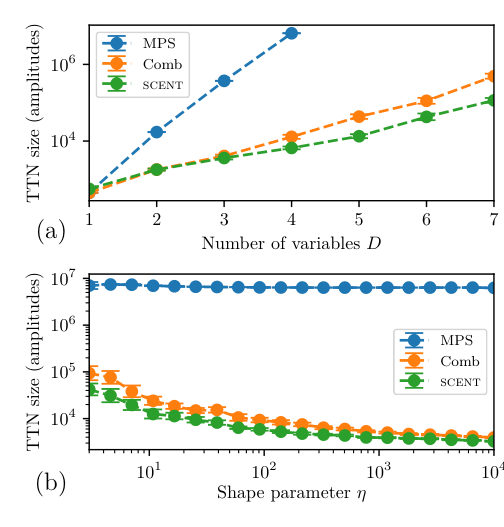
<figcaption class="paper-figure-caption"><b>Fig 5.</b> FIG. 4. Effect of variable count and correlation strength on tensor network function construction. We study systematically the effect of the number of variables D and inverse correlation strength η on multivariate normal dis- tributions N(⃗µ,Σ)(⃗x). For each data point, 20 random covari- ance matrices are sampled from Σ ∼LKJD(η), and 10 sweeps of TCI (sufficient for convergence, see e.g. Figure 3(c)) are performed to tolerance ϵid = 10−8 with B = 10 bits of pre- cision per variable. Error bars represent bootstrapped 95% confidence intervals in the logarithmic mean. (a) The effect of variable count D on tensor network size at moderate corre- lation η = 50. (b) The effect of correlation...</figcaption>
</figure>
</div>

<p><strong>Summary.</strong> This paper presents SCENT, a novel protocol to optimize the structure of Tree Tensor Networks (TTNs) for representing complex, multivariate quantum states. By determining the optimal tree topology using entanglement metrics, the authors enable an efficient, high-fidelity quantum state preparation pipeline. This method significantly improves resource scaling compared to traditional Matrix Product State approaches for challenging quantum simulations.</p>
<p><strong>Why it may be interesting.</strong> The ability to efficiently encode complex, high-dimensional correlations (like those in quantum chemistry or finance) into quantum circuits using optimized tensor network structures is crucial for simulating many-body quantum systems beyond current computational limits.</p>
<details>
<summary>Detailed structure</summary>
<p><strong>Main problem.</strong> The core challenge is efficiently preparing general quantum states, especially those derived from multivariate functions, which is exponentially hard using standard methods.</p>
<p><strong>Main result.</strong> The authors introduce SCENT, a protocol that optimizes the Tree Tensor Network (TTN) structure, leading to a quantum state preparation pipeline that substantially outperforms MPS and previous TTN methods.</p>
<p><strong>Method.</strong> The approach involves using SCENT to determine an optimal TTN structure based on pairwise entanglement metrics, followed by Tensor Cross-Interpolation (TCI) and an environment-tensor based circuit compilation method.</p>
<p><strong>Model / system.</strong> The model is quantum state preparation for amplitude-encoded functions, represented by tensor networks (MPS and TTNs). The system is generalized to handle complex, multivariate correlations beyond the limitations of linear chain topologies.</p>
<p><strong>Key observables.</strong> Fidelity (e.g., $7.44	imes 10^{-9}$ infidelity), CNOT gate count (e.g., 43284 CNOTs), and circuit depth.</p>
<p><strong>Important parameters / regimes.</strong> Bond dimension ($\chi$), target decomposition error ($\epsilon$), and the choice of entanglement metric (e.g., Boolean Fourier entropy $\kappa(i, j)$).</p>
<p><strong>Assumptions / limitations.</strong> The method assumes that the underlying function correlations can be effectively mapped onto a tree-like structure (TTN) rather than a linear chain (MPS).</p>
<p><strong>Figures summary.</strong> Figures illustrate the structural discovery process using affinity matrices, the comparison of different entanglement metrics, and the multi-step process of compiling isometries into quantum circuits.</p>
<p><strong>Paper structure.</strong> The paper progresses from identifying the limitations of MPS for multivariate functions to introducing SCENT for optimal TTN structure discovery, detailing the TCI approximation, and finally presenting a multi-stage algorithm for compiling the resulting TTN into a minimal-gate quantum circuit.</p>
</details>
<details>
<summary>Abstract</summary>
<p>Quantics tensor trains are attracting intense interest for quantum-inspired computing and quantum state preparation. These methods, which approximate continuum functions by representing their amplitude encoding as a matrix product state (MPS), are exceedingly powerful for univariate functions but rapidly become challenging when handling multivariate functions, since the linear chain topology leads to a large distance between highly-entangled qubits. We overcome this limitation by introducing SCENT (Spectral Clustering for Entanglement miNimizing Trees). SCENT is a protocol that utilizes efficiently-computable pairwise entanglement metrics to determine a suitable tree tensor network (TTN) structure, which can then be efficiently approximated using tensor cross-interpolation (TCI); we find that it substantially outperforms MPS methods and improves upon previous TTN methods. We then apply these optimized TTNs to state preparation, introducing an approximate circuit compilation method based on environment-tensor methods without significantly conceding overall accuracy. Importantly, the inherent gauge freedom of TTNs can be directly exploited in this method, resulting in higher fidelity at a given circuit depth. We demonstrate this quantum state-preparation pipeline on archetypal state-preparation problems in quantum chemistry and financial portfolio optimization. In our flagship demonstration, we encode a 20-variable probability distribution with long-ranged, non-nearest neighbor inter-variable correlations in a 200-qubit state-preparation circuit with infidelity $7.44\times 10^{-9}$ using only 43284 CNOTs; depth and fidelity can be traded, allowing the same distribution to be prepared to infidelity $10^{-3}$ with as few as 5584 CNOTs.</p>
</details>
<p><sub><a href="#top">↑ back to top</a></sub></p>

<p><a id="paper-2609.09629"></a></p>
<h3 id="a-sum-of-squares-hierarchy-with-quadratic-convergence-for-quantum-channel-coding"><a href="http://arxiv.org/abs/2609.09629v1">A Sum-of-Squares Hierarchy with Quadratic Convergence for Quantum Channel Coding</a></h3>
<p><strong>Authors:</strong> Hoang Ta, Hoang Anh Tran<br>
<strong>Type:</strong> theory · <strong>Category:</strong> quantum information and computing · <strong>PDF:</strong> <a href="https://arxiv.org/pdf/2609.09629v1">https://arxiv.org/pdf/2609.09629v1</a><br>
<strong>Analysis basis:</strong> full PDF text, analyzed in chunks
<strong>Topic relevance:</strong> <code>quantum measurements</code> <strong>2/5</strong></p>
<div class="figure-strip-hint">↔ Scroll figures horizontally</div>
<div class="paper-figures-scroll">
<figure class="paper-figure-card">
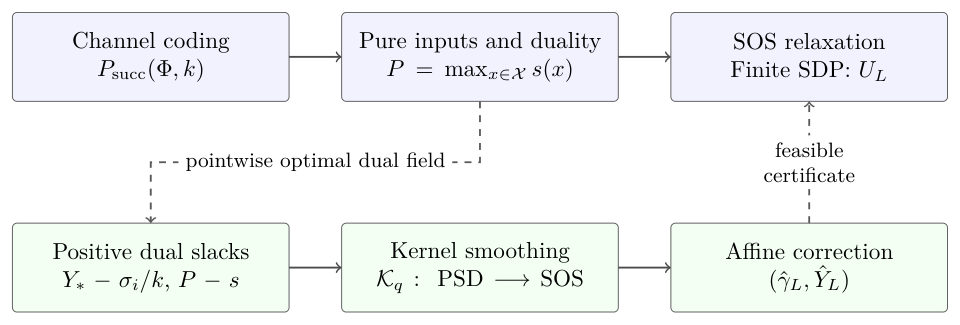
<figcaption class="paper-figure-caption"><b>Fig 1.</b> Figure 1: Construction of the SOS hierarchy (upper row) and feasible certificates for its convergence analysis (lower row). The kernel is used in the proof; solving the finite SDP does not require knowing the optimal field Y∗or the value P.</figcaption>
</figure>
<figure class="paper-figure-card">

<figcaption class="paper-figure-caption"><b>Fig 2.</b> Figure 2: First-level bounds for 40 random qubit-to-qutrit channels. Panels (a) and (b) compare the computed values with ηref for Choi ranks 6 and 3. Panel (c) shows the gaps on a logarithmic scale, with channels sorted by ηref within each rank group. SOS values include numerical certificate repair.</figcaption>
</figure>
</div>

<p><strong>Summary.</strong> This work develops a novel Hermitian sum-of-squares (SOS) hierarchy to compute upper bounds on the optimal success probability for quantum channel coding. By leveraging state-discrimination duality and positive polynomial kernels, the authors prove that this hierarchy exhibits quadratic convergence. This provides a significant theoretical advancement for bounding quantum channel capacities, which is crucial for quantum communication theory.</p>
<p><strong>Why it may be interesting.</strong> The development of polynomial hierarchy methods (SOS) to solve classically hard problems in quantum information theory provides powerful, generalizable tools for bounding quantum channel capacities.</p>
<details>
<summary>Detailed structure</summary>
<p><strong>Main problem.</strong> The paper addresses the NP-hard problem of computing the optimal success probability for transmitting classical messages through a single use of a quantum channel.</p>
<p><strong>Main result.</strong> The authors construct a Hermitian sum-of-squares (SOS) hierarchy that achieves quadratic convergence for bounding this success probability, providing strong theoretical tools for quantum channel capacity estimation.</p>
<p><strong>Method.</strong> The core method involves combining state-discrimination duality with positive polynomial kernels on products of spheres to construct feasible polynomial dual certificates within an SOS framework.</p>
<p><strong>Model / system.</strong> The system analyzed is a general quantum channel $\Phi: \mathcal{L}(A) 	o \mathcal{L}(B)$ acting on finite-dimensional complex Hilbert spaces $A$ and $B$. The problem is framed in terms of optimizing input states and POVMs for message transmission.</p>
<p><strong>Key observables.</strong> Optimal success probability $P_{	ext{succ}}(\Phi, k)$, the trace-norm contraction coefficient $\eta_{	ext{tr}}(\Phi)$, and the upper bounds $U_L(\Phi, k)$ derived from the hierarchy.</p>
<p><strong>Important parameters / regimes.</strong> The number of messages $k$, the dimension parameters $d_A$ and $d_B$, and the hierarchy level $L$.</p>
<p><strong>Assumptions / limitations.</strong> The analysis assumes finite-dimensional Hilbert spaces and relies on replacing pointwise positivity constraints with finite-degree SOS certificates.</p>
<p><strong>Figures summary.</strong> Figure 1 summarizes the construction, showing the SOS hierarchy and the feasible certificates used for convergence analysis.</p>
<p><strong>Paper structure.</strong> The paper builds upon existing SDP hierarchies, introduces the SOS formulation using state-discrimination duality, and rigorously proves the quadratic convergence rate of the resulting bounds.</p>
</details>
<details>
<summary>Abstract</summary>
<p>Computing the optimal success probability for transmitting classical messages through a single use of a quantum channel is NP-hard, even for two messages. An existing semidefinite programming hierarchy based on symmetric extensions provides convergent upper bounds with an a priori error estimate that decays as the inverse square root of the extension level. In this work, we construct a Hermitian sum-of-squares hierarchy for an arbitrary number of messages and prove quadratic convergence in its level. The error bound is proportional to the advantage over random guessing. Our approach combines state-discrimination duality with positive polynomial kernels on products of spheres to construct feasible polynomial dual certificates. For binary messages, the resulting bounds give a multiplicative approximation from above of the trace-norm contraction coefficient.</p>
</details>
<p><sub><a href="#top">↑ back to top</a></sub></p>

<p><a id="paper-2609.10163"></a></p>
<h3 id="anizotropic-ising-model-on-2d-kagome-lattice-as-an-inhomogeneous-xyz-integrable-model"><a href="http://arxiv.org/abs/2609.10163v1">Anizotropic Ising Model on 2D Kagomé Lattice as an Inhomogeneous XYZ Integrable Model</a></h3>
<p><strong>Authors:</strong> Shahane A. Khachatryan, Hrachya Babujian, Ara G. Sedrakyan<br>
<strong>Type:</strong> theory · <strong>Category:</strong> statistical mechanics · <strong>PDF:</strong> <a href="https://arxiv.org/pdf/2609.10163v1">https://arxiv.org/pdf/2609.10163v1</a><br>
<strong>Analysis basis:</strong> full PDF text, analyzed in chunks
<strong>Topic relevance:</strong> <code>analog quantum simulation</code> <strong>2/5</strong></p>
<div class="figure-strip-hint">↔ Scroll figures horizontally</div>
<div class="paper-figures-scroll">
<figure class="paper-figure-card">
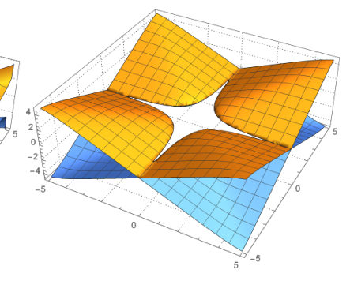
<figcaption class="paper-figure-caption"><b>Fig 1.</b> Figure 2: Critical subsurfaces on the real coordinate space J1, J2, J3</figcaption>
</figure>
</div>

<p><strong>Summary.</strong> This work analyzes an inhomogeneous Ising model on the Kagomé lattice by mapping it onto an integrable eight-vertex R-matrix structure. The authors derive corresponding one-dimensional quantum spin chain Hamiltonians for specific coupling limits and calculate the free energy and specific heat in the partially anisotropic regime. It provides a rigorous theoretical framework connecting lattice statistical mechanics to quantum integrability.</p>
<p><strong>Why it may be interesting.</strong> The deep connection between lattice statistical mechanics (Ising model) and integrable quantum systems (Yang-Baxter equation, Bethe ansatz) provides powerful mathematical tools applicable to understanding critical phenomena in complex quantum materials.</p>
<details>
<summary>Detailed structure</summary>
<p><strong>Main problem.</strong> The paper investigates the integrability and thermodynamic properties of a generalized inhomogeneous Ising model situated on the two-dimensional Kagomé lattice.</p>
<p><strong>Main result.</strong> The analysis derives specific quantum spin chain Hamiltonians for different coupling limits and calculates the free energy and specific heat for partially anisotropic regimes.</p>
<p><strong>Method.</strong> The methodology involves mapping local Boltzmann weights to a non-symmetric eight-vertex R-matrix, analyzing the Yang-Baxter structure, and utilizing free-fermion conditions.</p>
<p><strong>Model / system.</strong> The system is an inhomogeneous Ising model on the Kagomé lattice, generalized by incorporating two alternating coupling constants ($J_i$ and $J'_i$) along the three lattice directions.</p>
<p><strong>Key observables.</strong> Free energy per site ($F$), specific heat ($C$), and the partition function ($Z$).</p>
<p><strong>Important parameters / regimes.</strong> The alternating coupling constants ($J_i, J'_i$), and the anisotropic limit parameters.</p>
<p><strong>Assumptions / limitations.</strong> The analysis assumes nearest-neighbor interactions and relies on taking specific limits (e.g., anisotropic limit, continuum limit) to derive quantum Hamiltonians.</p>
<p><strong>Figures summary.</strong> Figure 1 illustrates the Kagomé lattice structure; Figure 2 likely shows the critical surface condition for the anisotropic Kagomé lattice.</p>
<p><strong>Paper structure.</strong> The paper progresses from defining the inhomogeneous model and its partition function via an R-matrix formulation, establishing its integrability via the free-fermion condition, analyzing special cases ($J'_i = \pm J_i$) to derive 1D quantum chains, and finally calculating thermodynamic quantities like free energy and specific heat in the partially anisotropic limit.</p>
</details>
<details>
<summary>Abstract</summary>
<p>We investigate a generalized inhomogeneous two-dimensional Ising model on the kagomé lattice with two alternating couplings $J_i$ and $J'_i$, $i=1,2,3$, along the three lattice directions. The local Boltzmann weights are mapped onto a non-symmetric eight-vertex $R$-matrix satisfying the free-fermion condition for arbitrary values of the six couplings. We analyze the Yang--Baxter structure for the cases $J'_i=J_i$ and $J'_i=-J_i$ and derive the corresponding one-dimensional quantum spin chains in the anisotropic limit. The first case yields a transverse-field Ising-type Hamiltonian, while the second leads to a modified chain with a graded permutation structure and shifted partition-function zeros. For a partially anisotropic model, we also obtain the free energy and specific heat.</p>
</details>
<p><sub><a href="#top">↑ back to top</a></sub></p>

<p><a id="paper-2609.09292"></a></p>
<h3 id="dual-unitary-circuits-as-a-platform-for-quantum-reservoir-computing"><a href="http://arxiv.org/abs/2609.09292v1">Dual-unitary Circuits as a Platform for Quantum Reservoir Computing</a></h3>
<p><strong>Authors:</strong> Gabriel O. Alves, Pieter W. Claeys<br>
<strong>Type:</strong> theory · <strong>Category:</strong> disordered systems and neural networks · <strong>PDF:</strong> <a href="https://arxiv.org/pdf/2609.09292v1">https://arxiv.org/pdf/2609.09292v1</a><br>
<strong>Analysis basis:</strong> full PDF text, analyzed in chunks
<strong>Topic relevance:</strong> <code>analog quantum simulation</code> <strong>2/5</strong></p>
<div class="figure-strip-hint">↔ Scroll figures horizontally</div>
<div class="paper-figures-scroll">
<figure class="paper-figure-card">
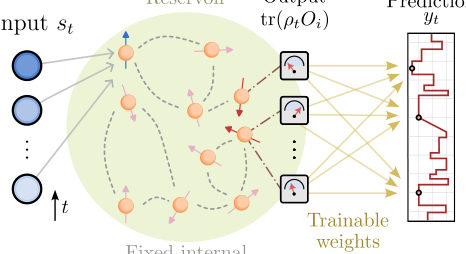
<figcaption class="paper-figure-caption"><b>Fig 1.</b> FIG. 1. An illustration of a quantum reservoir computer. The data (blue), e.g. a time series st, is encoded into a system which displays intricate internal dynamics. By evolving, the system processes the data in a nonlinear way and with memory. By performing measure- ments on the system, features are extracted which are then used to train the weights W by fitting the target function (red) yt. Unlike standard neural network architectures, the “internal weights” in the reservoir are fixed and set by the choice of reservoir, and the train- ing procedure reduces to a linear optimization on the single output layer. This picture represents a simplified QRC protocol where all the input data is...</figcaption>
</figure>
<figure class="paper-figure-card">

<figcaption class="paper-figure-caption"><b>Fig 2.</b> FIG. 2. Dynamical phase diagram for the DU XXZ circuit follow- ing the parametrization in Eq. (2). By varying the Trotter step we can move towards and away from the DU line at ∆t = π/4. The in- set details the behavior of the circuit at this point. First, by turning off the on-site disorder with ϵ = 0 (green edge), we have an inter- acting integrable circuit. The circuit displays solitons in this regime, which lead to unique behavior and memory effects, as we discuss in Sec. V A. Meanwhile, at Jz = 1 the circuit is non-interacting (red edge). The circuit is in the chaotic regime (blue region) for Jz , 1 and nonvanishing on-site disorder (ϵ &gt; 0).</figcaption>
</figure>
<figure class="paper-figure-card">
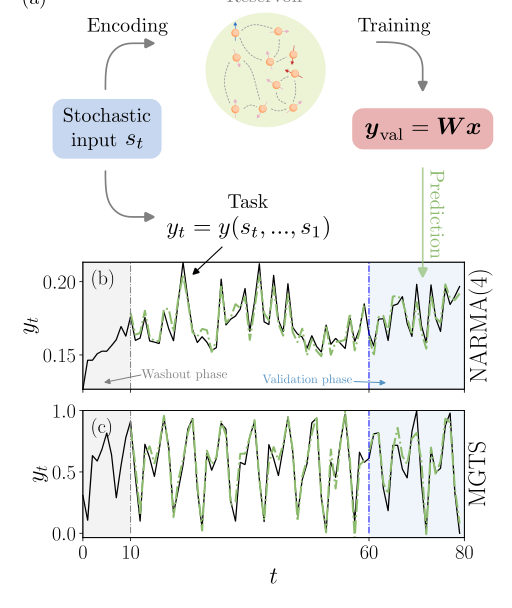
<figcaption class="paper-figure-caption"><b>Fig 3.</b> FIG. 3. (a) The stochastic input st is fed into Eq. (21) to encode its value into the system; simultaneously, it also serves as an argument for the chosen benchmark yt from Sec. III B [any of Eqs. (28)-(32)]. The feature matrix x is computed through Eq. (24), which allows for the calculation of the weight vector W in Eq. (25). Finally, the validation results are calculated through Eq. (26), where we try to fit the target time-series yt. We plot some basic numerical results to illustrate the framework, where we compare the analytical time- series (solid black line) with the numerical predictions (dashed green line), for both the (b) NARMA(4) and (c) the MGTS tasks. The data is split into...</figcaption>
</figure>
<figure class="paper-figure-card">
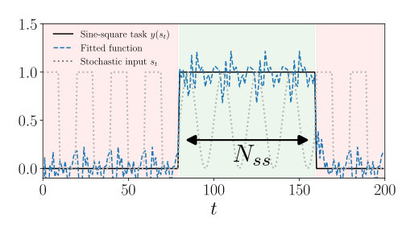
<figcaption class="paper-figure-caption"><b>Fig 4.</b> FIG. 4. An illustration of the sine-square task. The gray dotted line depicts the stochastic inputs st, which belong either to a square or sine wave. The corresponding classification yt = y(st) ∈{0, 1}, given by Eq. (31), is drawn with the solid black line. As a further guide to the eye, we also shade these regions with red and green colors on the background. The value Nss = 20 is the number of points per packet. Finally, the blue dashed line displays an example for the fitted function.</figcaption>
</figure>
<figure class="paper-figure-card">

<figcaption class="paper-figure-caption"><b>Fig 5.</b> FIG. 5. Information processing capacity as a function of the delay for: [top row, panels (a) and (b)] the STM task [Eq. (28)], [middle row, panels (c) and (d)] the parity check task [Eq. (29)], and [bot- tom row, panels (e) and (f)] the NARMA(τ + 3) task [Eq. (30)]. We plot the results for the integrable (left column, ϵ = 0) and ergodic regimes (right column, ϵ = 1), for four values of the Trotter step, ∆t = π/4 (the dual-unitary point) through π/7, indicated by a color gradient from green/blue (at ∆t = π/4) to pink (away from dual- unitarity); marker shapes indicate the task (diamonds: STM, circles: parity check, triangles: NARMA). The dashed vertical line marks τ = L. The presence of...</figcaption>
</figure>
</div>

<p><strong>Summary.</strong> This work proposes using dual-unitary circuits, derived from the XXZ spin chain, as a superior physical platform for Quantum Reservoir Computing. The authors show that the inherent properties of dual-unitarity enhance memory retention and nonlinear processing while providing resilience against noise. This bridges quantum many-body physics with advanced machine learning applications.</p>
<p><strong>Why it may be interesting.</strong> The connection between the mathematical structure of dual-unitary operators (which are often studied in quantum control/information) and the practical requirements of machine learning (reservoir computing) provides a novel physical realization for complex computation.</p>
<details>
<summary>Detailed structure</summary>
<p><strong>Main problem.</strong> The paper explores using dual-unitary (DU) circuits as a robust and theoretically advantageous platform for Quantum Reservoir Computing (QRC).</p>
<p><strong>Main result.</strong> DU circuits improve memory effects and nonlinear processing compared to generic circuits, and they provide enhanced shielding against finite-shot noise.</p>
<p><strong>Method.</strong> The analysis combines theoretical derivation of DU circuits with numerical verification of dynamical properties, including the study of solitons and information processing capacity.</p>
<p><strong>Model / system.</strong> The model is based on a 1D lattice of qubits whose dynamics are governed by a Floquet unitary derived from a Trotterization of the XXZ spin chain, forming the DU circuit.</p>
<p><strong>Key observables.</strong> Memory effects, nonlinear processing capability, exponential concentration, and Information Processing Capacity (IPC).</p>
<p><strong>Important parameters / regimes.</strong> Anisotropy ($J_z$), Trotter step ($\Delta t$), and the presence of on-site disorder ($\epsilon$).</p>
<p><strong>Assumptions / limitations.</strong> The analysis assumes an odd circuit size $L$ and utilizes the 'erase-input' protocol for the QRC readout.</p>
<p><strong>Figures summary.</strong> Figure 1 illustrates the general QRC protocol flow. Figure 2 presents a dynamical phase diagram for the DU XXZ circuit, mapping out different operational regimes.</p>
<p><strong>Paper structure.</strong> The paper reviews the QRC protocol, details the construction of the DU circuit using the XXZ model, analyzes the dynamical features (memory, nonlinearity) in different parameter regimes, and concludes by quantifying the performance benefits of dual-unitarity.</p>
</details>
<details>
<summary>Abstract</summary>
<p>Quantum reservoir computing (QRC) is a machine learning approach which employs the internal dynamics of a physical system (the reservoir) to encode and process information. In this work, we explore the use of dual-unitary circuits in a brickwork architecture as a platform for QRC, well suited to current noisy intermediate-scale quantum devices. Dual-unitary circuits present both practical and conceptual advantages. Our results indicate that, under appropriate conditions, dual-unitarity can lead to an enhanced regime of operation: we numerically verify that it improves memory effects and nonlinear processing, and shields against finite-shot noise, mitigating exponential concentration. Moreover, dual unitarity offers an intuitive picture of how operator dynamics gives rise to memory and nonlinear processing in circuit-based reservoirs.</p>
</details>
<p><sub><a href="#top">↑ back to top</a></sub></p>

<p><a id="paper-2609.09334"></a></p>
<h3 id="execution-transcript-privacy-for-fault-tolerant-surface-code-memories"><a href="http://arxiv.org/abs/2609.09334v1">Execution-transcript privacy for fault-tolerant surface-code memories</a></h3>
<p><strong>Authors:</strong> Jiachen Shen, Hui Zhong<br>
<strong>Type:</strong> theory · <strong>Category:</strong> quantum information and computing · <strong>PDF:</strong> <a href="https://arxiv.org/pdf/2609.09334v1">https://arxiv.org/pdf/2609.09334v1</a><br>
<strong>Analysis basis:</strong> full PDF text, analyzed in chunks
<strong>Topic relevance:</strong> <code>quantum measurements</code> <strong>2/5</strong></p>
<div class="figure-strip-hint">↔ Scroll figures horizontally</div>
<div class="paper-figures-scroll">
<figure class="paper-figure-card">

<figcaption class="paper-figure-caption"><b>Fig 1.</b> Figure 1: The transcript privacy channel and the two regimes. A logical input enters a surface-code memory that emits the non-output transcript U while the output Y stays hidden. The two input-conditioned laws of ordinary U nearly coincide (private), while a calibrated witness W separates them (leaks).</figcaption>
</figure>
<figure class="paper-figure-card">

<figcaption class="paper-figure-caption"><b>Fig 2.</b> Figure 2: The mechanism. (a) By Knill–Laflamme, a bra–ket fault pair K† bKa with homo- logically trivial support multiplies the code space by a scalar within its syndrome sector and cancels in the two transcript laws. The condition is trivial homology, not weight below d (Remark 5). (b) An input-sensitive contribution must therefore carry a homologically nontrivial cycle, whose support is ≥d, so logical information enters only through a charged region of size ≥d/ℓ∗. The schematic is spatial only, and the expansion runs over spacetime detector regions.</figcaption>
</figure>
<figure class="paper-figure-card">

<figcaption class="paper-figure-caption"><b>Fig 3.</b> Figure 3: An adversarial null for the honest transcript (bootstrap 95% CIs; circuit-level depolarizing noise at p = 0.005, minimum-weight perfect-matching decoder, logistic adversary on the full detector record, held-out split). (a) An adversary given the full detector record stays at chance for honest U across d = 3, 5, 7 and reaches near one with a charged witness W. (b) The same adversary stays at chance under coherent and leakage noise in an exact statevector simulation at d = 3 (five noise models).</figcaption>
</figure>
<figure class="paper-figure-card">
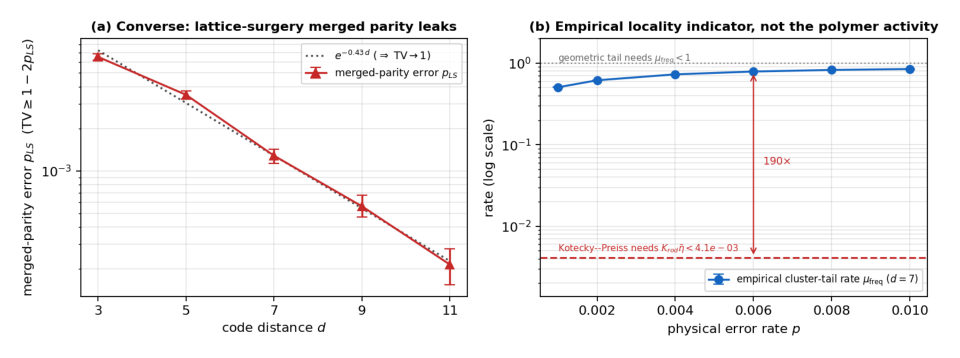
<figcaption class="paper-figure-caption"><b>Fig 4.</b> Figure 4: The converse and the locality indicator (bootstrap 95% CIs). (a) The lattice-surgery merged-parity error pLS decays exponentially in d (MWPM decoder), so the converse bound 1 −2pLS rises toward one. (b) The empirical cluster-tail rate µfreq, fitted to the sizes of the observed fired-detector components Robs, which are not the fault-support regions Rlat the theorem is stated for. This rate also differs from the polymer activity. The Kotecký–Preiss condition ea &lt; 1 requires Krod¯η &lt; 1/(e3 deg) ≈4.1 × 10−3 at detector degree 12, a threshold drawn as the dashed line, while the measured indicator sits about 190× above it. A geometric tail with µfreq &lt; 1 supports the form PWTS assumes....</figcaption>
</figure>
<figure class="paper-figure-card">
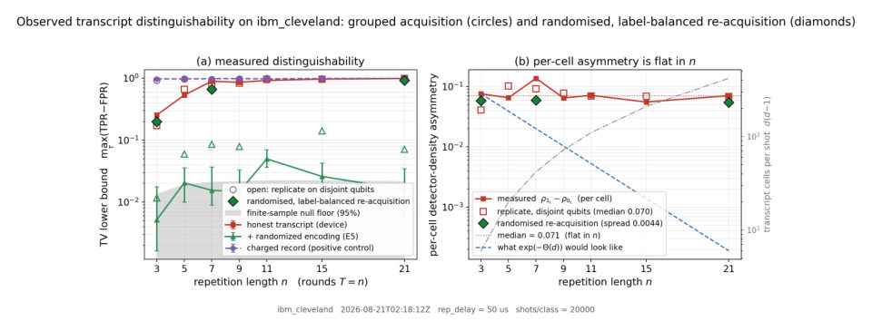
<figcaption class="paper-figure-caption"><b>Fig 5.</b> Figure 5: Measured transcript privacy on ibm_cleveland. Filled circles are the original grouped acquisition. The filled diamonds are the randomised, label-balanced re- acquisition at n = 3, 7, 21, which is the acquisition used for the headline number. (a) Total- variation lower bound against code repetition length for the honest transcript, randomized encoding, and a deliberately planted charged record. The shaded band is the finite-sample null floor, and open markers repeat the whole sweep on a disjoint qubit set. Randomisation moves n = 21 from 0.949 to 0.927 and n = 7 from 0.880 to 0.660, and the second change provides the control that detects acquisition-order contamination without...</figcaption>
</figure>
</div>

<p><strong>Summary.</strong> This work rigorously analyzes the privacy leakage from the classical execution records of fault-tolerant quantum memories. It proves that while fault tolerance protects the logical state, the syndrome transcript itself can leak input information, with the leakage rate determined by the code's Z-distance. This has significant implications for the security assessment of quantum hardware.</p>
<p><strong>Why it may be interesting.</strong> It provides rigorous theoretical bounds on the security of quantum computation against side-channel attacks based on measurement leakage, which is crucial for building trustworthy quantum hardware.</p>
<details>
<summary>Detailed structure</summary>
<p><strong>Main problem.</strong> The paper investigates whether the classical telemetry stream generated during fault-tolerant quantum computation can leak information about the initial logical input state.</p>
<p><strong>Main result.</strong> Fault tolerance does not guarantee transcript privacy; the leakage is quantified and shown to be governed by the code's Z-distance ($d_Z$) under amplitude damping noise.</p>
<p><strong>Method.</strong> The analysis uses information-theoretic tools, including the diamond norm and total variation distance, drawing on concepts like correctability-privacy duality and homology.</p>
<p><strong>Model / system.</strong> The model is a fault-tolerant quantum memory implemented using a distance-$d$ rotated surface code, operating over $\Theta(d)$ rounds.</p>
<p><strong>Key observables.</strong> Total Variation Distance ($    ext{TV}$), diamond norm distance, and the leakage rate quantified by $d_Z$.</p>
<p><strong>Important parameters / regimes.</strong> Code distance ($d$), Z-distance ($d_Z$), amplitude damping rate ($\gamma$), and the number of rounds ($T$).</p>
<p><strong>Assumptions / limitations.</strong> The results are conditional on specific hypotheses (e.g., transcript locality) and the analysis distinguishes between idealized theoretical bounds and practical measurement limitations.</p>
<p><strong>Figures summary.</strong> Figures illustrate the transcript privacy channel, showing the separation between the ordinary transcript and a calibrated witness that leaks the input.</p>
<p><strong>Paper structure.</strong> The paper develops theoretical bounds on leakage, analyzes specific code types (repetition, phase-flip), and discusses the implications of different noise models and measurement techniques.</p>
</details>
<details>
<summary>Abstract</summary>
<p>A fault-tolerant quantum computer runs behind a telemetry stream logging syndromes, decoder actions, resets and timing separately from the answer. Can it reveal the logical input? For a distance-$d$ rotated surface-code memory on a fixed schedule of $T=Θ(d)$ rounds, under three stated hypotheses (sector-scalar honest backbone, transcript locality, Kotecky-Preiss smallness), the channel from logical qubit to transcript is $e^{-Θ(d)}$-close in diamond norm to one that ignores the input. A statement of this kind follows generically from correctability-privacy duality. Anisotropy does not. Each logical axis pays the distance of its own coset, so under amplitude damping the computational-basis label is governed by the code's $Z$-distance $d_Z\ge d_{\min}$ and not by the code distance. Two codes of quantum distance $1$ make the gap concrete. A phase-flip code's $X$-syndrome transcript is exactly input-independent under unobserved damping, while a repetition code leaks at first order. A matched converse identifies the records that do expose it, among them a lattice-surgery parity readout. On a 156-qubit superconducting processor our sufficient certificate misses by $21.5\times$, so the theorem cannot be invoked there. Measured directly, a $d_Z=1$ memory's record identifies its input with total variation $\ge 0.927$ under randomised, label-balanced acquisition. Holding the code fixed and varying the damping exposure reproduces the parameter-free law, with exponent $0.85\pm0.03$ against a predicted $0.86$. Randomized encoding returns the statistic to the floor at no two-qubit-gate cost. Fault tolerance does not grant transcript privacy. It relocates it, and only to the logical state, not to the circuit's identity.</p>
</details>
<p><sub><a href="#top">↑ back to top</a></sub></p>

<p><a id="paper-2609.09977"></a></p>
<h3 id="from-block-encoding-to-generalized-quantum-signal-processing-principles-algorithms-and-applications"><a href="http://arxiv.org/abs/2609.09977v1">From Block-encoding to Generalized Quantum Signal Processing: Principles, Algorithms and Applications</a></h3>
<p><strong>Authors:</strong> Tal Gurfinkel, Kaushika De Silva, Anuradha Mahasinghe, Jens Renders, Jack Blyth, James Greenwell, Archie Butterworth, Yusen Wu, Lyle Noakes, Miloud Bessafi, Frederic Cadet, Jingbo Wang<br>
<strong>Type:</strong> theory · <strong>Category:</strong> quantum information and computing · <strong>PDF:</strong> <a href="https://arxiv.org/pdf/2609.09977v1">https://arxiv.org/pdf/2609.09977v1</a><br>
<strong>Analysis basis:</strong> full PDF text, analyzed in chunks
<strong>Topic relevance:</strong> <code>analog quantum simulation</code> <strong>2/5</strong></p>
<div class="figure-strip-hint">↔ Scroll figures horizontally</div>
<div class="paper-figures-scroll">
<figure class="paper-figure-card">
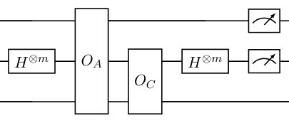
<figcaption class="paper-figure-caption"><b>Fig 1.</b> Figure 1: Sparse-access block-encoding circuit for an s-sparse matrix, where m = ⌈log2 s⌉. The upper two registers form the signal register, and compression onto |0⟩|0m⟩yields the unnormalized post- selected branch corresponding to A |ψ⟩, with normalization factor 2m.</figcaption>
</figure>
<figure class="paper-figure-card">

<figcaption class="paper-figure-caption"><b>Fig 2.</b> Figure 7: Degree-d QSP circuit in the W(x) convention. The circuit contains d applications of the signal unitary W(x) interleaved with d+1 phase rotations, and the |0⟩-signal amplitude of the output is P(x).</figcaption>
</figure>
<figure class="paper-figure-card">
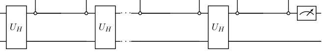
<figcaption class="paper-figure-caption"><b>Fig 3.</b> Figure 8: Ancilla-mediated phase-kickback implementation of the QET sequence UeΦ(WH) from The- orem 2.15 [3]. The implemented angles satisfy bϕk = eϕk + π/2 for 0 ≤k &lt; d and bϕd = eϕd. Each non- terminal phase operation followed by UH realizes i eieϕkRWH. Hence, the complete circuit implements idUeΦ(WH), differing from the desired sequence only by the known global phase id. The open controls jointly condition on the block-encoding ancillae being in |0a⟩and represent signal-controlled NOT C(q) Π defined in Eq. (59), where Π = |0a⟩⟨0a|⊗I. Each pair of C(q) Π , combined with e−iϕjZ, implements the projected phase eiϕj(2Π−I), while returning the kickback qubit q coherently to |0⟩....</figcaption>
</figure>
<figure class="paper-figure-card">

<figcaption class="paper-figure-caption"><b>Fig 4.</b> Figure 9: Explicit phase-kickback implementation of the odd- and even-degree QSVT sequences [1]. Each pair of open-controlled NOT gates is conditioned on the block-encoding ancillae being in |0⟩⊗a. Together with e−iϕjZ, the pair implements the projected phase eiϕj(2Π−I), where Π = |0a⟩⟨0a| ⊗I, while returning the kickback qubit q coherently to |0⟩. The gates U and U† act jointly on the block- encoding ancillae and the system register. Post-selecting the block-encoding ancillae on |0a⟩outputs P(H/α)|ψ⟩ ∥P(H/α)|ψ⟩∥with probability psucc = ∥P(H/α) |ψ⟩∥2 on the system register.</figcaption>
</figure>
<figure class="paper-figure-card">
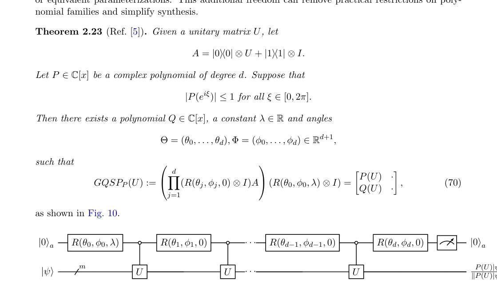
<figcaption class="paper-figure-caption"><b>Fig 5.</b> Figure 10: GQSP circuit with a zero-controlled signal unitary U [5]. The upper qubit is the signal ancilla, and each open control applies U when this ancilla is in |0⟩. Post-selection on |0⟩a outputs P(U)|ψ⟩ ∥P(U)|ψ⟩∥with psucc = ∥P(U) |ψ⟩∥2 on the system register.</figcaption>
</figure>
</div>

<p><strong>Summary.</strong> This paper unifies the design of quantum algorithms for computing functions of matrices by introducing a comprehensive toolkit comprising block-encoding, Qubitization, QSP, QSVT, and GQSP. It provides a systematic workflow for choosing the right technique based on the operator structure. This framework is vital for advancing quantum linear algebra and designing practical quantum simulations.</p>
<p><strong>Why it may be interesting.</strong> This work provides a powerful, general algorithmic toolkit for quantum computation, directly impacting how one designs algorithms for simulating quantum dynamics or solving linear systems, which is crucial for AMO and open quantum systems.</p>
<details>
<summary>Detailed structure</summary>
<p><strong>Main problem.</strong> The core challenge is implementing non-unitary matrix functions (like inverses or matrix exponentials) using quantum circuits, which are fundamentally unitary.</p>
<p><strong>Main result.</strong> The paper establishes a unified, systematic framework using block-encoding, qubitization, QSP, QSVT, and GQSP to construct quantum algorithms for matrix function evaluation with near-optimal query complexity.</p>
<p><strong>Method.</strong> The authors develop an end-to-end pipeline: identifying the target function, constructing a block-encoding, selecting the spectral domain, approximating the function with a polynomial, and synthesizing the final quantum circuit.</p>
<p><strong>Model / system.</strong> The focus is on abstract quantum operators and matrices, treating the problem as a general quantum linear algebra task rather than a specific physical Hamiltonian simulation.</p>
<p><strong>Key observables.</strong> Spectral information, eigenvalues, singular values, and the required polynomial or rational function $f(A)$.</p>
<p><strong>Important parameters / regimes.</strong> Query complexity, normalization factor ($\alpha$) in block-encoding, and the structure of the target matrix function.</p>
<p><strong>Assumptions / limitations.</strong> The primary assumption is that the required matrix function can be accurately approximated by a polynomial or Laurent polynomial, and that the necessary block-encoding can be constructed efficiently.</p>
<p><strong>Figures summary.</strong> Figures compare polynomial approximations (Chebyshev vs. power-basis) to exact functions and compare quantum simulation results against classical solvers like Crank–Nicolson.</p>
<p><strong>Paper structure.</strong> The paper builds from first principles, introducing the key tools (block-encoding, Qubitization, QSP, QSVT, GQSP) and culminates in a systematic decision workflow (flowchart) for applying these techniques to various matrix function problems.</p>
</details>
<details>
<summary>Abstract</summary>
<p>Modern quantum algorithms are increasingly formulated as coherent procedures for implementing polynomial transformations of operators and singular values. This perspective provides a powerful and unifying language for quantum algorithm design, connecting a wide range of distinct problems through five closely related key tools: block-encoding, qubitization, QSP, QSVT and GQSP. Block-encoding embeds non-unitary matrices into larger unitaries; qubitization converts block-encodings into structured operators; QSP, QSVT and GQSP enable polynomial transformations with near-optimal query complexity. Together, these techniques form a general toolkit for transforming matrix functions into implementable quantum circuits. This paper develops these techniques from first principles as a unified framework for constructing quantum algorithms. We apply this framework to representative applications to highlight design principles and demonstrate how distinct algorithms can be constructed from a unified sequence of operator transformations.   A central contribution is a systematic decision workflow for selecting the appropriate approach according to the operator structure and the desired transformation polynomial. This perspective clarifies when direct GQSP or through qubitization, or Laurent expansion, or QSVT is most appropriate. We organize algorithmic design into an end-to-end pipeline: identifying the target matrix function, constructing an appropriate block-encoding, determining the relevant spectral domain, designing a polynomial or Laurent-polynomial approximation, synthesizing the phase factors, and translating the transformation into an executable quantum circuit. By applying this unified framework to example applications, we showcase a practical methodology for reasoning, designing, and implementing quantum algorithms based on polynomial transformations.</p>
</details>
<p><sub><a href="#top">↑ back to top</a></sub></p>
<hr>
<p>
<a href="index.html">← Index</a>
 · <a href="papers_03.html">← Previous</a> · <a href="papers_05.html">Next →</a>
</p>
<hr>

</body>
</html>
